Temporal Stability
Brief Description
We used the Meta-Analytic Stability and Change model (Anusic & Schimmack, 2015) to describe the trajectory of the test-retest correlations of risk preference over time.
\[ \begin{aligned} Y_{t2-t1} = rel \times \ (change \times \ (stabch^{time} - 1) + 1) \end{aligned} \]
\(Y_{t2-t1}\) : test-retest correlation for a specific time interval (i.e., number of years between t1 and t2)
\(rel\) : proportion of reliable variance
\(change\) : proportion of reliable variance explained by changing factors
\(stabch\) : the stability of the changing factors over time (per year)
\(time\) : number of years between t1 and t2

Illustration of MASC parameters. Adapted from Anusic and Schimack, 2015
Below we provide information on the model specifications and an overview of the model fits, with posterior predictive checks (PPCs), approximate leave-one-out (LOO) cross-validation output, and convergence diagnostics (i.e., rhat values, trace plots, effective sample size). We fitted the same model separately to the set of test-retest correlations of each risk preference measure category (i.e., propensity, frequency and behavior).
To replicate these analyses, refer to the Workflow page
Model specification in brms
# specify family
family <- brmsfamily(
family = "student",
link = "identity"
)
# formula
formula <- bf(
wcor | se(sei, sigma = TRUE) ~ rel * ((1-change) + (change) * (stabch^time_diff_dec)),
nlf(rel ~ inv_logit(logitrel)),
nlf(change ~ inv_logit(logitchange)),
nlf(stabch ~ inv_logit(logitstabch)),
logitrel ~ 1 + domain_name*age_dec_c + domain_name*age_dec_c2 + female_prop_c +
(1 + age_dec_c + age_dec_c2 + female_prop_c | panel),
logitchange ~ 1+ domain_name*age_dec_c + domain_name*age_dec_c2 + female_prop_c,
logitstabch ~ 1+ domain_name*age_dec_c + domain_name*age_dec_c2 + female_prop_c,
nl = TRUE
)
# weakly informative priors
priors <-
prior(normal(0, 1), nlpar="logitrel", class = "b") +
prior(normal(0, 1), nlpar="logitchange", class = "b") +
prior(normal(0, 1), nlpar="logitstabch", class = "b") +
prior(cauchy(0, 1), nlpar="logitrel", class = "sd") +
prior(cauchy(0, 1), class = "sigma") +
prior(lkj(1), group="sample", class = "L") Fitted Models: Risk Preference
Propensity
Model Summary
brms output
## Family: student
## Links: mu = identity; sigma = identity; nu = identity
## Formula: wcor | resp_se(sei, sigma = TRUE) ~ rel * (change * ((stabch^time_diff_dec) - 1) + 1)
## rel ~ inv_logit(logitrel)
## change ~ inv_logit(logitchange)
## stabch ~ inv_logit(logitstabch)
## logitrel ~ 1 + age_dec_c * domain_name + age_dec_c2 * domain_name + female_prop_c + (1 + age_dec_c + age_dec_c2 + female_prop_c | sample)
## logitchange ~ 1 + age_dec_c * domain_name + age_dec_c2 * domain_name + female_prop_c
## logitstabch ~ 1 + age_dec_c * domain_name + age_dec_c2 * domain_name + female_prop_c
## Data: data_w (Number of observations: 3706)
## Draws: 2 chains, each with iter = 7000; warmup = 2000; thin = 1;
## total post-warmup draws = 10000
##
## Group-Level Effects:
## ~sample (Number of levels: 51)
## Estimate
## sd(logitrel_Intercept) 1.11
## sd(logitrel_age_dec_c) 0.08
## sd(logitrel_age_dec_c2) 0.03
## sd(logitrel_female_prop_c) 0.31
## cor(logitrel_Intercept,logitrel_age_dec_c) 0.15
## cor(logitrel_Intercept,logitrel_age_dec_c2) -0.26
## cor(logitrel_age_dec_c,logitrel_age_dec_c2) -0.08
## cor(logitrel_Intercept,logitrel_female_prop_c) 0.55
## cor(logitrel_age_dec_c,logitrel_female_prop_c) -0.11
## cor(logitrel_age_dec_c2,logitrel_female_prop_c) 0.09
## Est.Error
## sd(logitrel_Intercept) 0.13
## sd(logitrel_age_dec_c) 0.02
## sd(logitrel_age_dec_c2) 0.01
## sd(logitrel_female_prop_c) 0.06
## cor(logitrel_Intercept,logitrel_age_dec_c) 0.32
## cor(logitrel_Intercept,logitrel_age_dec_c2) 0.29
## cor(logitrel_age_dec_c,logitrel_age_dec_c2) 0.28
## cor(logitrel_Intercept,logitrel_female_prop_c) 0.17
## cor(logitrel_age_dec_c,logitrel_female_prop_c) 0.31
## cor(logitrel_age_dec_c2,logitrel_female_prop_c) 0.30
## l-95% CI
## sd(logitrel_Intercept) 0.90
## sd(logitrel_age_dec_c) 0.04
## sd(logitrel_age_dec_c2) 0.02
## sd(logitrel_female_prop_c) 0.20
## cor(logitrel_Intercept,logitrel_age_dec_c) -0.46
## cor(logitrel_Intercept,logitrel_age_dec_c2) -0.75
## cor(logitrel_age_dec_c,logitrel_age_dec_c2) -0.58
## cor(logitrel_Intercept,logitrel_female_prop_c) 0.16
## cor(logitrel_age_dec_c,logitrel_female_prop_c) -0.68
## cor(logitrel_age_dec_c2,logitrel_female_prop_c) -0.49
## u-95% CI
## sd(logitrel_Intercept) 1.39
## sd(logitrel_age_dec_c) 0.12
## sd(logitrel_age_dec_c2) 0.04
## sd(logitrel_female_prop_c) 0.45
## cor(logitrel_Intercept,logitrel_age_dec_c) 0.74
## cor(logitrel_Intercept,logitrel_age_dec_c2) 0.35
## cor(logitrel_age_dec_c,logitrel_age_dec_c2) 0.51
## cor(logitrel_Intercept,logitrel_female_prop_c) 0.81
## cor(logitrel_age_dec_c,logitrel_female_prop_c) 0.51
## cor(logitrel_age_dec_c2,logitrel_female_prop_c) 0.67
## Rhat
## sd(logitrel_Intercept) 1.00
## sd(logitrel_age_dec_c) 1.00
## sd(logitrel_age_dec_c2) 1.00
## sd(logitrel_female_prop_c) 1.00
## cor(logitrel_Intercept,logitrel_age_dec_c) 1.00
## cor(logitrel_Intercept,logitrel_age_dec_c2) 1.00
## cor(logitrel_age_dec_c,logitrel_age_dec_c2) 1.00
## cor(logitrel_Intercept,logitrel_female_prop_c) 1.00
## cor(logitrel_age_dec_c,logitrel_female_prop_c) 1.00
## cor(logitrel_age_dec_c2,logitrel_female_prop_c) 1.00
## Bulk_ESS
## sd(logitrel_Intercept) 1852
## sd(logitrel_age_dec_c) 2555
## sd(logitrel_age_dec_c2) 2278
## sd(logitrel_female_prop_c) 2595
## cor(logitrel_Intercept,logitrel_age_dec_c) 2391
## cor(logitrel_Intercept,logitrel_age_dec_c2) 3437
## cor(logitrel_age_dec_c,logitrel_age_dec_c2) 1828
## cor(logitrel_Intercept,logitrel_female_prop_c) 3793
## cor(logitrel_age_dec_c,logitrel_female_prop_c) 1347
## cor(logitrel_age_dec_c2,logitrel_female_prop_c) 1828
## Tail_ESS
## sd(logitrel_Intercept) 3202
## sd(logitrel_age_dec_c) 4303
## sd(logitrel_age_dec_c2) 3385
## sd(logitrel_female_prop_c) 4950
## cor(logitrel_Intercept,logitrel_age_dec_c) 3550
## cor(logitrel_Intercept,logitrel_age_dec_c2) 5256
## cor(logitrel_age_dec_c,logitrel_age_dec_c2) 3572
## cor(logitrel_Intercept,logitrel_female_prop_c) 5543
## cor(logitrel_age_dec_c,logitrel_female_prop_c) 2202
## cor(logitrel_age_dec_c2,logitrel_female_prop_c) 3250
##
## Population-Level Effects:
## Estimate Est.Error
## logitrel_Intercept 0.05 0.19
## logitrel_age_dec_c -0.01 0.09
## logitrel_domain_namedri 0.07 0.11
## logitrel_domain_nameeth 0.61 0.65
## logitrel_domain_namegam -0.01 0.24
## logitrel_domain_namegen 0.08 0.11
## logitrel_domain_nameinv -0.06 0.10
## logitrel_domain_nameocc -0.42 0.11
## logitrel_domain_namerec 0.19 0.13
## logitrel_domain_namesoc -0.32 0.19
## logitrel_age_dec_c2 0.15 0.10
## logitrel_female_prop_c -0.12 0.06
## logitrel_age_dec_c:domain_namedri -0.17 0.10
## logitrel_age_dec_c:domain_nameeth 0.07 0.55
## logitrel_age_dec_c:domain_namegam 0.05 0.27
## logitrel_age_dec_c:domain_namegen 0.09 0.09
## logitrel_age_dec_c:domain_nameinv 0.01 0.09
## logitrel_age_dec_c:domain_nameocc 0.19 0.09
## logitrel_age_dec_c:domain_namerec -0.11 0.12
## logitrel_age_dec_c:domain_namesoc 0.00 0.13
## logitrel_domain_namedri:age_dec_c2 -0.11 0.10
## logitrel_domain_nameeth:age_dec_c2 0.79 0.76
## logitrel_domain_namegam:age_dec_c2 0.25 0.17
## logitrel_domain_namegen:age_dec_c2 -0.19 0.10
## logitrel_domain_nameinv:age_dec_c2 -0.18 0.10
## logitrel_domain_nameocc:age_dec_c2 -0.18 0.10
## logitrel_domain_namerec:age_dec_c2 -0.10 0.10
## logitrel_domain_namesoc:age_dec_c2 -0.20 0.11
## logitchange_Intercept -0.24 0.27
## logitchange_age_dec_c 0.33 0.21
## logitchange_domain_namedri -0.17 0.54
## logitchange_domain_nameeth -0.03 0.47
## logitchange_domain_namegam 1.10 0.85
## logitchange_domain_namegen 0.09 0.34
## logitchange_domain_nameinv -0.21 0.28
## logitchange_domain_nameocc -0.15 0.74
## logitchange_domain_namerec -0.13 0.45
## logitchange_domain_namesoc -0.52 0.74
## logitchange_age_dec_c2 0.41 0.19
## logitchange_female_prop_c 0.06 0.06
## logitchange_age_dec_c:domain_namedri -0.02 0.47
## logitchange_age_dec_c:domain_nameeth -0.52 0.40
## logitchange_age_dec_c:domain_namegam 0.08 0.82
## logitchange_age_dec_c:domain_namegen -0.19 0.27
## logitchange_age_dec_c:domain_nameinv 0.85 0.27
## logitchange_age_dec_c:domain_nameocc 0.50 0.66
## logitchange_age_dec_c:domain_namerec -0.29 0.29
## logitchange_age_dec_c:domain_namesoc -0.11 0.71
## logitchange_domain_namedri:age_dec_c2 0.03 0.31
## logitchange_domain_nameeth:age_dec_c2 -0.27 0.34
## logitchange_domain_namegam:age_dec_c2 0.97 0.74
## logitchange_domain_namegen:age_dec_c2 -0.26 0.20
## logitchange_domain_nameinv:age_dec_c2 0.32 0.20
## logitchange_domain_nameocc:age_dec_c2 0.12 0.59
## logitchange_domain_namerec:age_dec_c2 -0.31 0.31
## logitchange_domain_namesoc:age_dec_c2 -0.48 0.65
## logitstabch_Intercept -0.86 0.42
## logitstabch_age_dec_c 0.63 0.25
## logitstabch_domain_namedri 0.62 0.66
## logitstabch_domain_nameeth -0.17 0.84
## logitstabch_domain_namegam -1.51 0.82
## logitstabch_domain_namegen 0.59 0.49
## logitstabch_domain_nameinv 0.47 0.43
## logitstabch_domain_nameocc 1.05 0.79
## logitstabch_domain_namerec -0.40 0.75
## logitstabch_domain_namesoc 0.59 1.00
## logitstabch_age_dec_c2 -0.42 0.17
## logitstabch_female_prop_c -0.29 0.08
## logitstabch_age_dec_c:domain_namedri 0.41 0.42
## logitstabch_age_dec_c:domain_nameeth 0.13 0.75
## logitstabch_age_dec_c:domain_namegam -1.03 0.73
## logitstabch_age_dec_c:domain_namegen -0.26 0.28
## logitstabch_age_dec_c:domain_nameinv 0.93 0.28
## logitstabch_age_dec_c:domain_nameocc -0.43 0.52
## logitstabch_age_dec_c:domain_namerec -0.07 0.52
## logitstabch_age_dec_c:domain_namesoc -0.09 0.83
## logitstabch_domain_namedri:age_dec_c2 0.13 0.20
## logitstabch_domain_nameeth:age_dec_c2 -1.31 0.81
## logitstabch_domain_namegam:age_dec_c2 -0.05 0.35
## logitstabch_domain_namegen:age_dec_c2 0.39 0.18
## logitstabch_domain_nameinv:age_dec_c2 0.08 0.17
## logitstabch_domain_nameocc:age_dec_c2 0.33 0.21
## logitstabch_domain_namerec:age_dec_c2 0.02 0.35
## logitstabch_domain_namesoc:age_dec_c2 0.38 0.76
## l-95% CI u-95% CI
## logitrel_Intercept -0.33 0.44
## logitrel_age_dec_c -0.19 0.16
## logitrel_domain_namedri -0.17 0.27
## logitrel_domain_nameeth -0.46 2.07
## logitrel_domain_namegam -0.46 0.47
## logitrel_domain_namegen -0.15 0.28
## logitrel_domain_nameinv -0.28 0.12
## logitrel_domain_nameocc -0.66 -0.22
## logitrel_domain_namerec -0.07 0.43
## logitrel_domain_namesoc -0.62 0.11
## logitrel_age_dec_c2 -0.01 0.35
## logitrel_female_prop_c -0.24 -0.00
## logitrel_age_dec_c:domain_namedri -0.37 0.04
## logitrel_age_dec_c:domain_nameeth -1.08 1.24
## logitrel_age_dec_c:domain_namegam -0.52 0.54
## logitrel_age_dec_c:domain_namegen -0.08 0.27
## logitrel_age_dec_c:domain_nameinv -0.17 0.19
## logitrel_age_dec_c:domain_nameocc 0.02 0.39
## logitrel_age_dec_c:domain_namerec -0.35 0.13
## logitrel_age_dec_c:domain_namesoc -0.25 0.25
## logitrel_domain_namedri:age_dec_c2 -0.31 0.06
## logitrel_domain_nameeth:age_dec_c2 -0.33 2.26
## logitrel_domain_namegam:age_dec_c2 -0.06 0.62
## logitrel_domain_namegen:age_dec_c2 -0.39 -0.03
## logitrel_domain_nameinv:age_dec_c2 -0.37 -0.02
## logitrel_domain_nameocc:age_dec_c2 -0.38 -0.01
## logitrel_domain_namerec:age_dec_c2 -0.31 0.08
## logitrel_domain_namesoc:age_dec_c2 -0.40 -0.01
## logitchange_Intercept -0.71 0.39
## logitchange_age_dec_c -0.06 0.79
## logitchange_domain_namedri -1.09 1.07
## logitchange_domain_nameeth -0.85 1.17
## logitchange_domain_namegam -0.65 2.70
## logitchange_domain_namegen -0.57 0.78
## logitchange_domain_nameinv -0.84 0.30
## logitchange_domain_nameocc -1.47 1.47
## logitchange_domain_namerec -0.84 0.97
## logitchange_domain_namesoc -1.95 1.08
## logitchange_age_dec_c2 0.10 0.88
## logitchange_female_prop_c -0.06 0.18
## logitchange_age_dec_c:domain_namedri -0.79 1.01
## logitchange_age_dec_c:domain_nameeth -1.29 0.51
## logitchange_age_dec_c:domain_namegam -1.47 1.72
## logitchange_age_dec_c:domain_namegen -0.70 0.38
## logitchange_age_dec_c:domain_nameinv 0.33 1.37
## logitchange_age_dec_c:domain_nameocc -0.84 1.76
## logitchange_age_dec_c:domain_namerec -0.84 0.31
## logitchange_age_dec_c:domain_namesoc -1.41 1.42
## logitchange_domain_namedri:age_dec_c2 -0.48 0.66
## logitchange_domain_nameeth:age_dec_c2 -0.91 0.54
## logitchange_domain_namegam:age_dec_c2 -0.46 2.46
## logitchange_domain_namegen:age_dec_c2 -0.73 0.06
## logitchange_domain_nameinv:age_dec_c2 -0.15 0.66
## logitchange_domain_nameocc:age_dec_c2 -0.74 1.59
## logitchange_domain_namerec:age_dec_c2 -0.79 0.19
## logitchange_domain_namesoc:age_dec_c2 -1.87 1.03
## logitstabch_Intercept -1.69 -0.05
## logitstabch_age_dec_c 0.13 1.12
## logitstabch_domain_namedri -0.76 1.80
## logitstabch_domain_nameeth -1.84 1.43
## logitstabch_domain_namegam -3.11 0.13
## logitstabch_domain_namegen -0.38 1.58
## logitstabch_domain_nameinv -0.37 1.34
## logitstabch_domain_nameocc -0.71 2.33
## logitstabch_domain_namerec -1.87 1.12
## logitstabch_domain_namesoc -1.52 2.32
## logitstabch_age_dec_c2 -0.75 -0.07
## logitstabch_female_prop_c -0.45 -0.14
## logitstabch_age_dec_c:domain_namedri -0.38 1.26
## logitstabch_age_dec_c:domain_nameeth -1.40 1.57
## logitstabch_age_dec_c:domain_namegam -2.56 0.29
## logitstabch_age_dec_c:domain_namegen -0.81 0.28
## logitstabch_age_dec_c:domain_nameinv 0.38 1.49
## logitstabch_age_dec_c:domain_nameocc -1.38 0.71
## logitstabch_age_dec_c:domain_namerec -1.09 0.95
## logitstabch_age_dec_c:domain_namesoc -1.73 1.53
## logitstabch_domain_namedri:age_dec_c2 -0.26 0.50
## logitstabch_domain_nameeth:age_dec_c2 -2.60 0.44
## logitstabch_domain_namegam:age_dec_c2 -0.75 0.61
## logitstabch_domain_namegen:age_dec_c2 0.02 0.73
## logitstabch_domain_nameinv:age_dec_c2 -0.28 0.41
## logitstabch_domain_nameocc:age_dec_c2 -0.09 0.74
## logitstabch_domain_namerec:age_dec_c2 -0.84 0.55
## logitstabch_domain_namesoc:age_dec_c2 -1.23 1.93
## Rhat Bulk_ESS
## logitrel_Intercept 1.00 448
## logitrel_age_dec_c 1.00 1128
## logitrel_domain_namedri 1.00 1051
## logitrel_domain_nameeth 1.00 631
## logitrel_domain_namegam 1.00 4846
## logitrel_domain_namegen 1.00 740
## logitrel_domain_nameinv 1.00 879
## logitrel_domain_nameocc 1.00 830
## logitrel_domain_namerec 1.00 1230
## logitrel_domain_namesoc 1.00 975
## logitrel_age_dec_c2 1.00 250
## logitrel_female_prop_c 1.00 1677
## logitrel_age_dec_c:domain_namedri 1.00 1781
## logitrel_age_dec_c:domain_nameeth 1.00 1305
## logitrel_age_dec_c:domain_namegam 1.00 3381
## logitrel_age_dec_c:domain_namegen 1.00 1100
## logitrel_age_dec_c:domain_nameinv 1.00 1202
## logitrel_age_dec_c:domain_nameocc 1.00 1209
## logitrel_age_dec_c:domain_namerec 1.00 2219
## logitrel_age_dec_c:domain_namesoc 1.00 1849
## logitrel_domain_namedri:age_dec_c2 1.01 270
## logitrel_domain_nameeth:age_dec_c2 1.01 245
## logitrel_domain_namegam:age_dec_c2 1.00 926
## logitrel_domain_namegen:age_dec_c2 1.00 245
## logitrel_domain_nameinv:age_dec_c2 1.01 248
## logitrel_domain_nameocc:age_dec_c2 1.00 250
## logitrel_domain_namerec:age_dec_c2 1.00 294
## logitrel_domain_namesoc:age_dec_c2 1.01 290
## logitchange_Intercept 1.00 777
## logitchange_age_dec_c 1.00 1950
## logitchange_domain_namedri 1.00 2794
## logitchange_domain_nameeth 1.00 822
## logitchange_domain_namegam 1.00 4262
## logitchange_domain_namegen 1.00 1560
## logitchange_domain_nameinv 1.00 832
## logitchange_domain_nameocc 1.00 3008
## logitchange_domain_namerec 1.00 932
## logitchange_domain_namesoc 1.00 3846
## logitchange_age_dec_c2 1.01 578
## logitchange_female_prop_c 1.00 1827
## logitchange_age_dec_c:domain_namedri 1.00 3876
## logitchange_age_dec_c:domain_nameeth 1.00 2214
## logitchange_age_dec_c:domain_namegam 1.00 4935
## logitchange_age_dec_c:domain_namegen 1.00 2529
## logitchange_age_dec_c:domain_nameinv 1.00 3011
## logitchange_age_dec_c:domain_nameocc 1.00 4345
## logitchange_age_dec_c:domain_namerec 1.00 1847
## logitchange_age_dec_c:domain_namesoc 1.00 3985
## logitchange_domain_namedri:age_dec_c2 1.00 1446
## logitchange_domain_nameeth:age_dec_c2 1.00 1080
## logitchange_domain_namegam:age_dec_c2 1.00 2953
## logitchange_domain_namegen:age_dec_c2 1.01 614
## logitchange_domain_nameinv:age_dec_c2 1.01 663
## logitchange_domain_nameocc:age_dec_c2 1.00 2530
## logitchange_domain_namerec:age_dec_c2 1.00 753
## logitchange_domain_namesoc:age_dec_c2 1.00 2922
## logitstabch_Intercept 1.00 688
## logitstabch_age_dec_c 1.00 1138
## logitstabch_domain_namedri 1.00 2987
## logitstabch_domain_nameeth 1.00 2614
## logitstabch_domain_namegam 1.00 5355
## logitstabch_domain_namegen 1.00 1274
## logitstabch_domain_nameinv 1.00 916
## logitstabch_domain_nameocc 1.00 2521
## logitstabch_domain_namerec 1.00 1241
## logitstabch_domain_namesoc 1.00 2113
## logitstabch_age_dec_c2 1.00 308
## logitstabch_female_prop_c 1.00 7543
## logitstabch_age_dec_c:domain_namedri 1.00 3313
## logitstabch_age_dec_c:domain_nameeth 1.00 3390
## logitstabch_age_dec_c:domain_namegam 1.00 3635
## logitstabch_age_dec_c:domain_namegen 1.00 1110
## logitstabch_age_dec_c:domain_nameinv 1.00 1519
## logitstabch_age_dec_c:domain_nameocc 1.00 2901
## logitstabch_age_dec_c:domain_namerec 1.00 3653
## logitstabch_age_dec_c:domain_namesoc 1.00 3589
## logitstabch_domain_namedri:age_dec_c2 1.00 408
## logitstabch_domain_nameeth:age_dec_c2 1.00 270
## logitstabch_domain_namegam:age_dec_c2 1.00 1891
## logitstabch_domain_namegen:age_dec_c2 1.00 314
## logitstabch_domain_nameinv:age_dec_c2 1.00 329
## logitstabch_domain_nameocc:age_dec_c2 1.00 451
## logitstabch_domain_namerec:age_dec_c2 1.00 1396
## logitstabch_domain_namesoc:age_dec_c2 1.00 1826
## Tail_ESS
## logitrel_Intercept 843
## logitrel_age_dec_c 1890
## logitrel_domain_namedri 2240
## logitrel_domain_nameeth 2540
## logitrel_domain_namegam 6215
## logitrel_domain_namegen 1578
## logitrel_domain_nameinv 1540
## logitrel_domain_nameocc 1805
## logitrel_domain_namerec 3376
## logitrel_domain_namesoc 1382
## logitrel_age_dec_c2 605
## logitrel_female_prop_c 4028
## logitrel_age_dec_c:domain_namedri 2953
## logitrel_age_dec_c:domain_nameeth 1965
## logitrel_age_dec_c:domain_namegam 4504
## logitrel_age_dec_c:domain_namegen 1848
## logitrel_age_dec_c:domain_nameinv 1871
## logitrel_age_dec_c:domain_nameocc 2121
## logitrel_age_dec_c:domain_namerec 4183
## logitrel_age_dec_c:domain_namesoc 2342
## logitrel_domain_namedri:age_dec_c2 796
## logitrel_domain_nameeth:age_dec_c2 646
## logitrel_domain_namegam:age_dec_c2 4838
## logitrel_domain_namegen:age_dec_c2 576
## logitrel_domain_nameinv:age_dec_c2 680
## logitrel_domain_nameocc:age_dec_c2 653
## logitrel_domain_namerec:age_dec_c2 823
## logitrel_domain_namesoc:age_dec_c2 945
## logitchange_Intercept 943
## logitchange_age_dec_c 3141
## logitchange_domain_namedri 3240
## logitchange_domain_nameeth 655
## logitchange_domain_namegam 6567
## logitchange_domain_namegen 1419
## logitchange_domain_nameinv 1161
## logitchange_domain_nameocc 5271
## logitchange_domain_namerec 555
## logitchange_domain_namesoc 4605
## logitchange_age_dec_c2 508
## logitchange_female_prop_c 4057
## logitchange_age_dec_c:domain_namedri 4870
## logitchange_age_dec_c:domain_nameeth 823
## logitchange_age_dec_c:domain_namegam 6066
## logitchange_age_dec_c:domain_namegen 3629
## logitchange_age_dec_c:domain_nameinv 4632
## logitchange_age_dec_c:domain_nameocc 5146
## logitchange_age_dec_c:domain_namerec 1649
## logitchange_age_dec_c:domain_namesoc 5292
## logitchange_domain_namedri:age_dec_c2 1579
## logitchange_domain_nameeth:age_dec_c2 485
## logitchange_domain_namegam:age_dec_c2 3371
## logitchange_domain_namegen:age_dec_c2 497
## logitchange_domain_nameinv:age_dec_c2 498
## logitchange_domain_nameocc:age_dec_c2 3511
## logitchange_domain_namerec:age_dec_c2 478
## logitchange_domain_namesoc:age_dec_c2 2851
## logitstabch_Intercept 1033
## logitstabch_age_dec_c 3098
## logitstabch_domain_namedri 5168
## logitstabch_domain_nameeth 5903
## logitstabch_domain_namegam 6065
## logitstabch_domain_namegen 2110
## logitstabch_domain_nameinv 1862
## logitstabch_domain_nameocc 4791
## logitstabch_domain_namerec 639
## logitstabch_domain_namesoc 2946
## logitstabch_age_dec_c2 557
## logitstabch_female_prop_c 7309
## logitstabch_age_dec_c:domain_namedri 5145
## logitstabch_age_dec_c:domain_nameeth 5928
## logitstabch_age_dec_c:domain_namegam 5168
## logitstabch_age_dec_c:domain_namegen 3766
## logitstabch_age_dec_c:domain_nameinv 4493
## logitstabch_age_dec_c:domain_nameocc 4437
## logitstabch_age_dec_c:domain_namerec 5589
## logitstabch_age_dec_c:domain_namesoc 4936
## logitstabch_domain_namedri:age_dec_c2 1067
## logitstabch_domain_nameeth:age_dec_c2 502
## logitstabch_domain_namegam:age_dec_c2 4070
## logitstabch_domain_namegen:age_dec_c2 646
## logitstabch_domain_nameinv:age_dec_c2 591
## logitstabch_domain_nameocc:age_dec_c2 1673
## logitstabch_domain_namerec:age_dec_c2 4059
## logitstabch_domain_namesoc:age_dec_c2 2512
##
## Family Specific Parameters:
## Estimate Est.Error l-95% CI u-95% CI Rhat Bulk_ESS
## sigma 0.03 0.00 0.03 0.03 1.00 8254
## nu 3.65 0.22 3.23 4.11 1.00 9249
## Tail_ESS
## sigma 7382
## nu 8190
##
## Draws were sampled using sample(hmc). For each parameter, Bulk_ESS
## and Tail_ESS are effective sample size measures, and Rhat is the potential
## scale reduction factor on split chains (at convergence, Rhat = 1).MCMC diagnostics
logitrel parameter
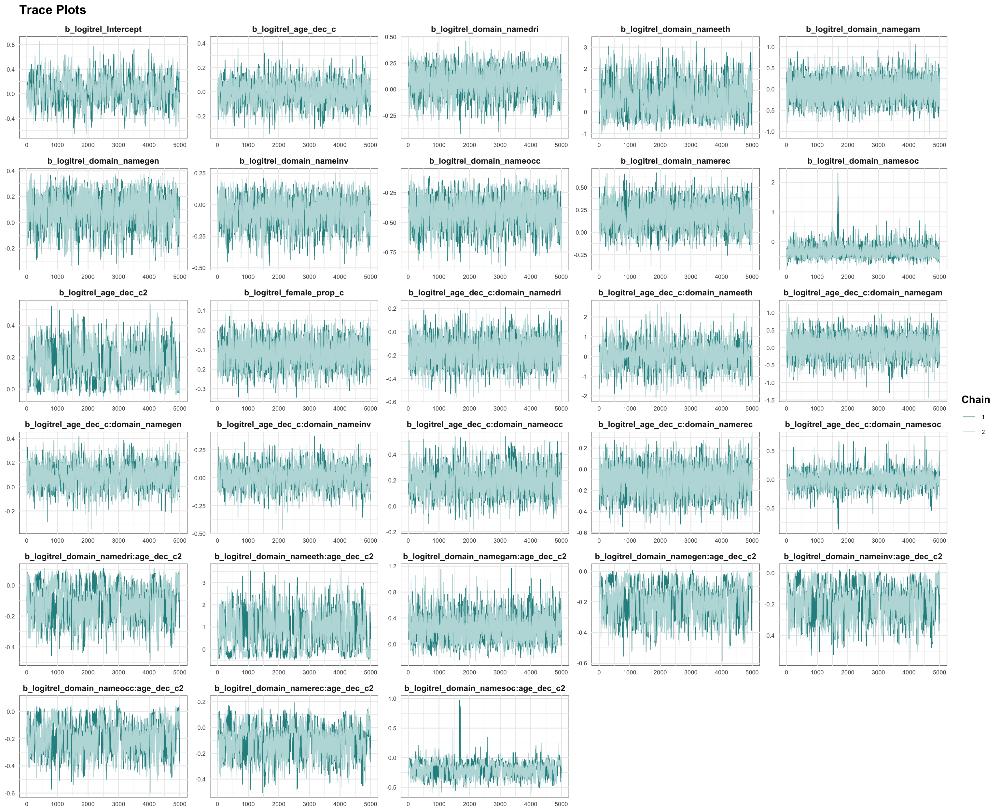
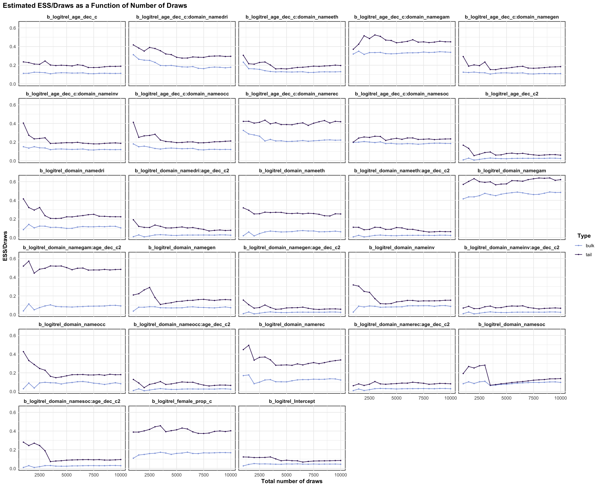
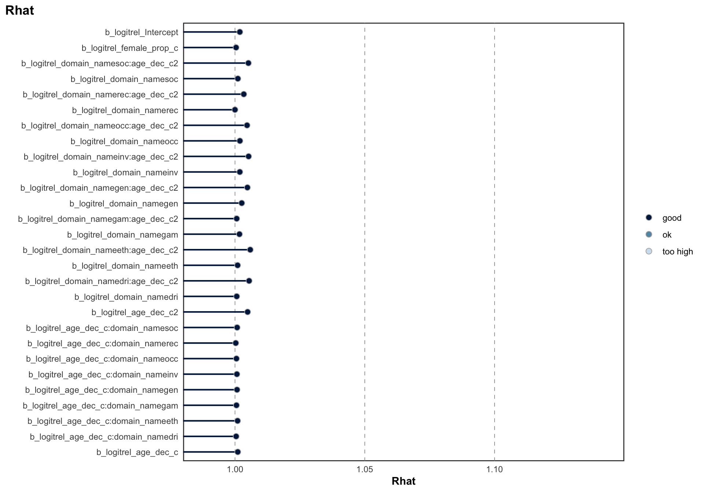
logitchange parameter

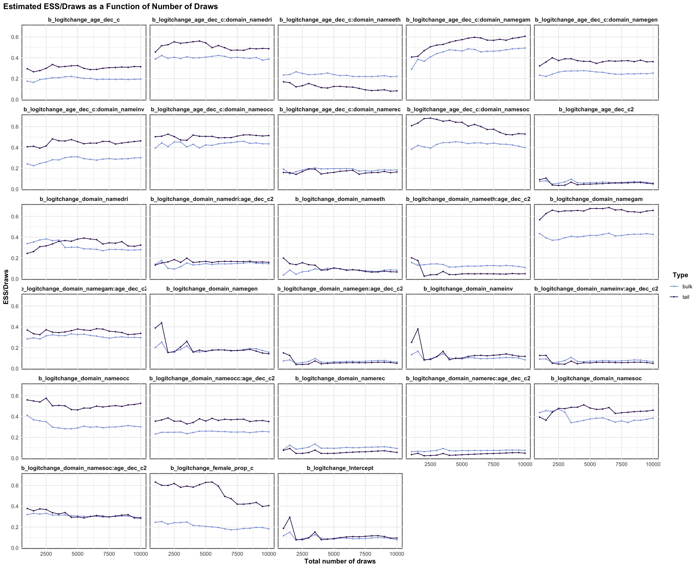
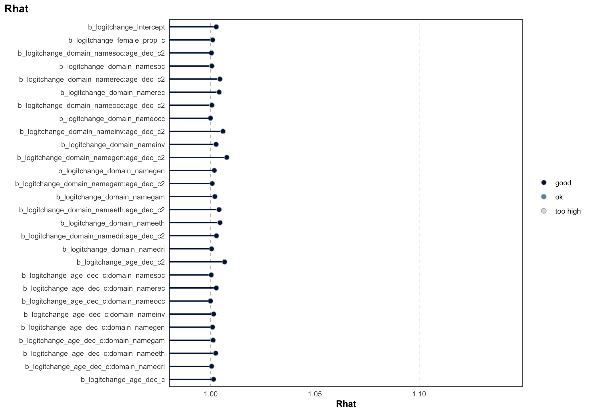
logitstabch parameter
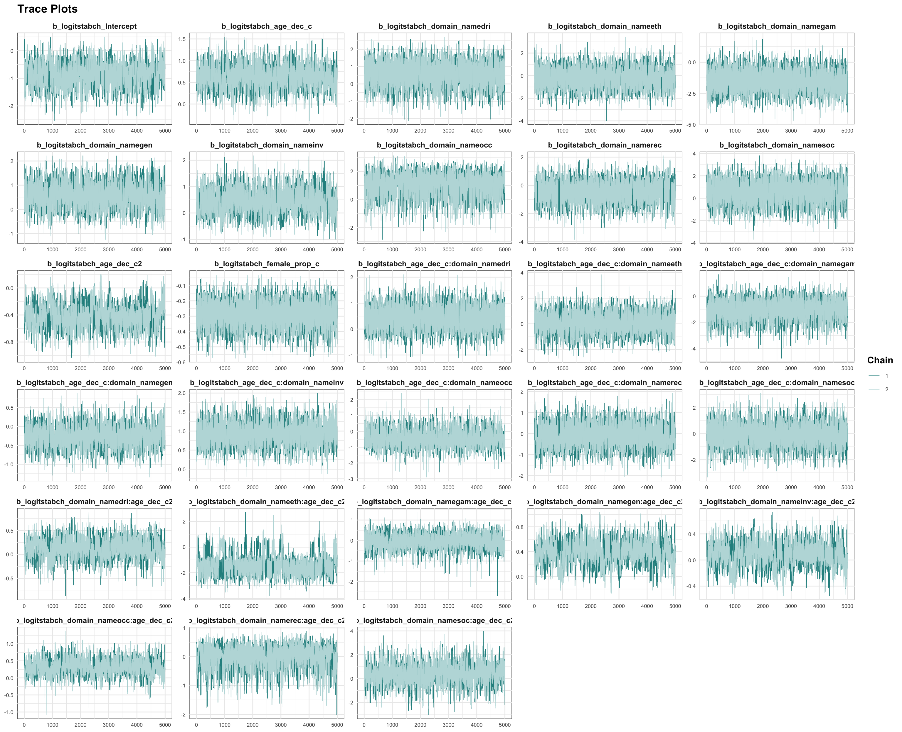
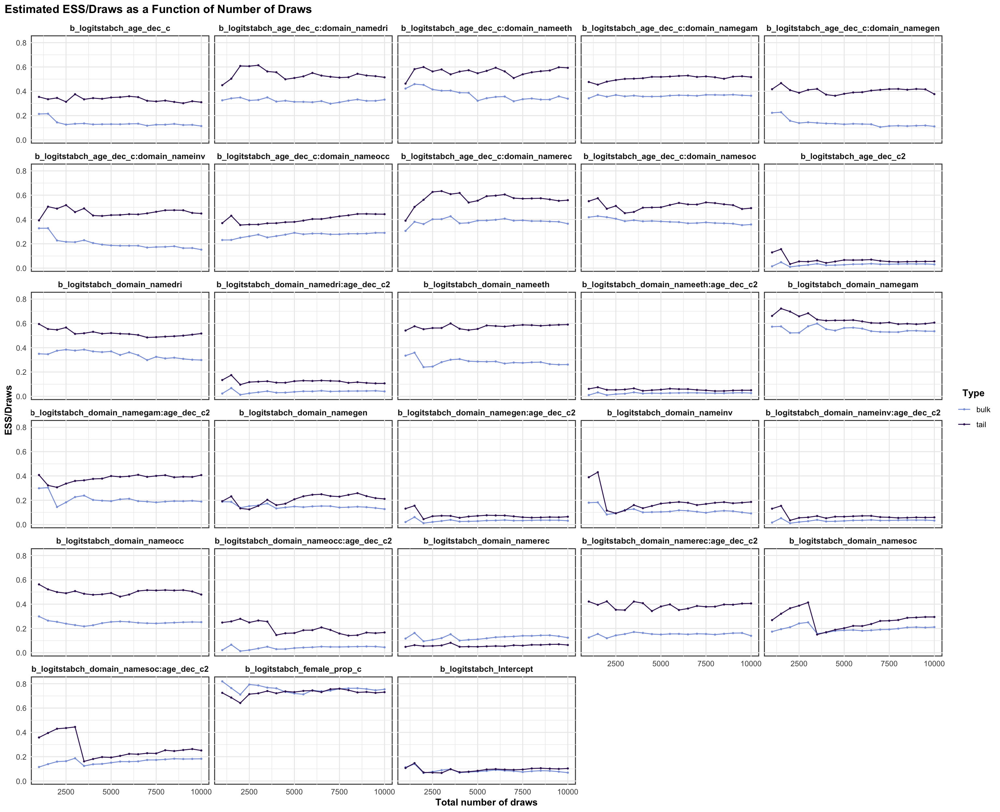
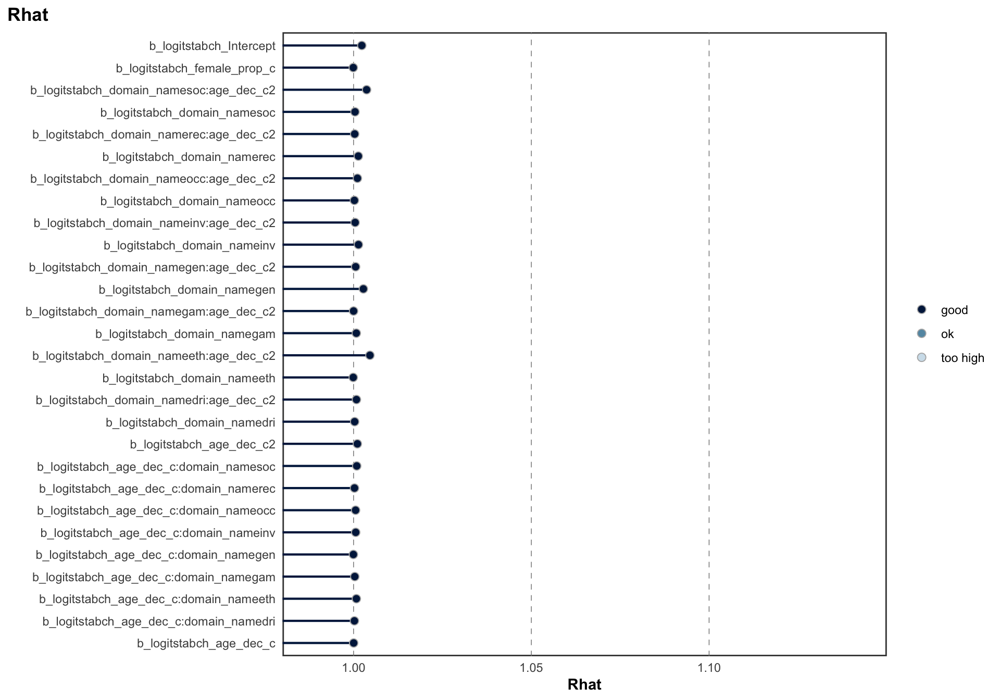
Random Structure

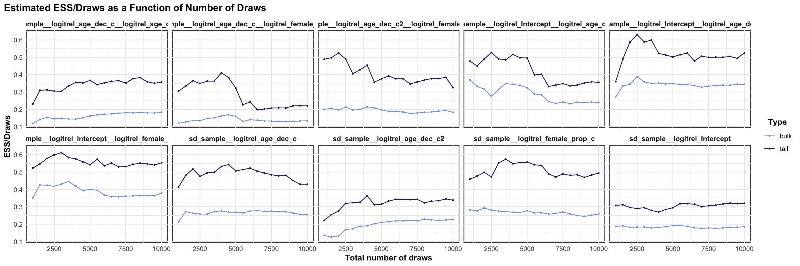
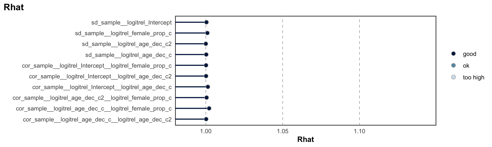
PPCs & LOO
Graphical posterior predictive checks
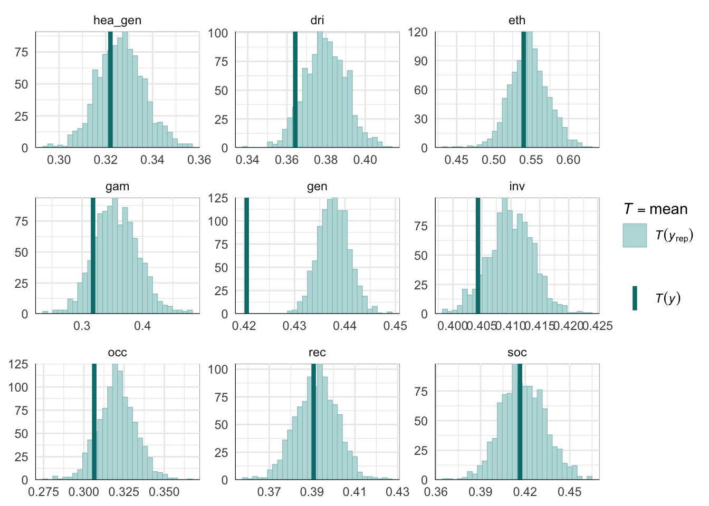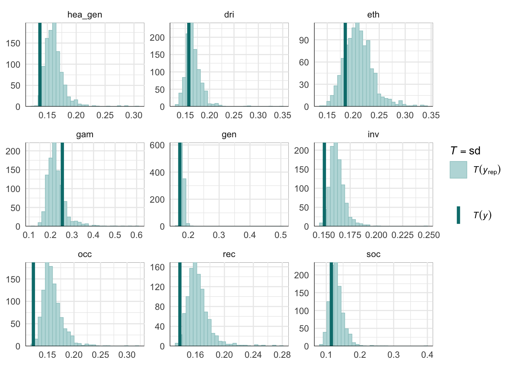
##
## Computed from 10000 by 3706 log-likelihood matrix
##
## Estimate SE
## elpd_loo 3902.4 65.9
## p_loo 209.2 5.8
## looic -7804.9 131.7
## ------
## Monte Carlo SE of elpd_loo is NA.
##
## Pareto k diagnostic values:
## Count Pct. Min. n_eff
## (-Inf, 0.5] (good) 3698 99.8% 283
## (0.5, 0.7] (ok) 7 0.2% 70
## (0.7, 1] (bad) 0 0.0% <NA>
## (1, Inf) (very bad) 1 0.0% 3367
## See help('pareto-k-diagnostic') for details.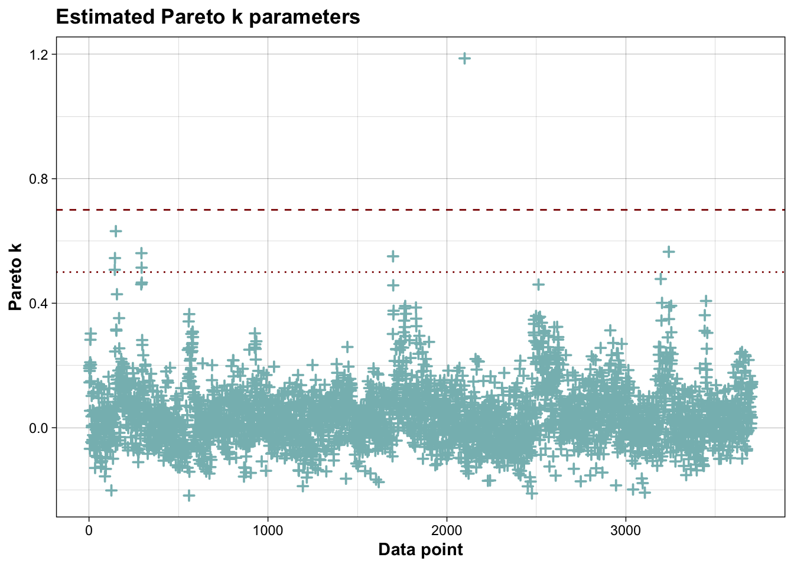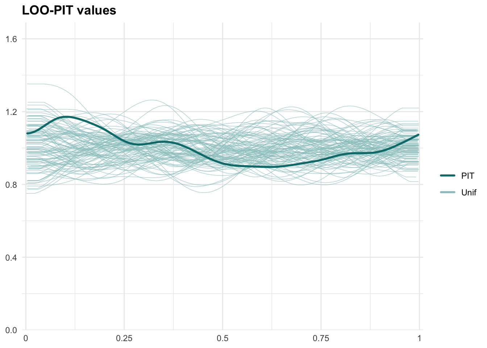
By-Panel Predictions
In the tabs are panel-specific predictions for the trajectory of domain-specific test-retest correlations over time (predictions based on the weighted median age of the sample, 50% female).
Driving

Ethical

Gambling

General Risk

General Health

Investment

Occupational

Recreational

Frequency
Model Summary
brms output
## Family: student
## Links: mu = identity; sigma = identity; nu = identity
## Formula: wcor | resp_se(sei, sigma = TRUE) ~ rel * (change * ((stabch^time_diff_dec) - 1) + 1)
## rel ~ inv_logit(logitrel)
## change ~ inv_logit(logitchange)
## stabch ~ inv_logit(logitstabch)
## logitrel ~ 1 + age_dec_c * domain_name + age_dec_c2 * domain_name + female_prop_c + (1 + age_dec_c + age_dec_c2 + female_prop_c | sample)
## logitchange ~ 1 + age_dec_c * domain_name + age_dec_c2 * domain_name + female_prop_c
## logitstabch ~ 1 + age_dec_c * domain_name + age_dec_c2 * domain_name + female_prop_c
## Data: data_w (Number of observations: 3678)
## Draws: 2 chains, each with iter = 7000; warmup = 2000; thin = 1;
## total post-warmup draws = 10000
##
## Group-Level Effects:
## ~sample (Number of levels: 34)
## Estimate
## sd(logitrel_Intercept) 1.18
## sd(logitrel_age_dec_c) 0.32
## sd(logitrel_age_dec_c2) 0.09
## sd(logitrel_female_prop_c) 0.30
## cor(logitrel_Intercept,logitrel_age_dec_c) 0.22
## cor(logitrel_Intercept,logitrel_age_dec_c2) -0.22
## cor(logitrel_age_dec_c,logitrel_age_dec_c2) -0.46
## cor(logitrel_Intercept,logitrel_female_prop_c) 0.33
## cor(logitrel_age_dec_c,logitrel_female_prop_c) 0.28
## cor(logitrel_age_dec_c2,logitrel_female_prop_c) 0.15
## Est.Error
## sd(logitrel_Intercept) 0.18
## sd(logitrel_age_dec_c) 0.09
## sd(logitrel_age_dec_c2) 0.02
## sd(logitrel_female_prop_c) 0.06
## cor(logitrel_Intercept,logitrel_age_dec_c) 0.22
## cor(logitrel_Intercept,logitrel_age_dec_c2) 0.21
## cor(logitrel_age_dec_c,logitrel_age_dec_c2) 0.24
## cor(logitrel_Intercept,logitrel_female_prop_c) 0.21
## cor(logitrel_age_dec_c,logitrel_female_prop_c) 0.22
## cor(logitrel_age_dec_c2,logitrel_female_prop_c) 0.26
## l-95% CI
## sd(logitrel_Intercept) 0.86
## sd(logitrel_age_dec_c) 0.17
## sd(logitrel_age_dec_c2) 0.05
## sd(logitrel_female_prop_c) 0.19
## cor(logitrel_Intercept,logitrel_age_dec_c) -0.24
## cor(logitrel_Intercept,logitrel_age_dec_c2) -0.62
## cor(logitrel_age_dec_c,logitrel_age_dec_c2) -0.82
## cor(logitrel_Intercept,logitrel_female_prop_c) -0.12
## cor(logitrel_age_dec_c,logitrel_female_prop_c) -0.18
## cor(logitrel_age_dec_c2,logitrel_female_prop_c) -0.36
## u-95% CI
## sd(logitrel_Intercept) 1.58
## sd(logitrel_age_dec_c) 0.53
## sd(logitrel_age_dec_c2) 0.14
## sd(logitrel_female_prop_c) 0.44
## cor(logitrel_Intercept,logitrel_age_dec_c) 0.62
## cor(logitrel_Intercept,logitrel_age_dec_c2) 0.21
## cor(logitrel_age_dec_c,logitrel_age_dec_c2) 0.09
## cor(logitrel_Intercept,logitrel_female_prop_c) 0.70
## cor(logitrel_age_dec_c,logitrel_female_prop_c) 0.68
## cor(logitrel_age_dec_c2,logitrel_female_prop_c) 0.62
## Rhat
## sd(logitrel_Intercept) 1.00
## sd(logitrel_age_dec_c) 1.00
## sd(logitrel_age_dec_c2) 1.00
## sd(logitrel_female_prop_c) 1.00
## cor(logitrel_Intercept,logitrel_age_dec_c) 1.00
## cor(logitrel_Intercept,logitrel_age_dec_c2) 1.00
## cor(logitrel_age_dec_c,logitrel_age_dec_c2) 1.00
## cor(logitrel_Intercept,logitrel_female_prop_c) 1.00
## cor(logitrel_age_dec_c,logitrel_female_prop_c) 1.00
## cor(logitrel_age_dec_c2,logitrel_female_prop_c) 1.00
## Bulk_ESS
## sd(logitrel_Intercept) 2372
## sd(logitrel_age_dec_c) 1373
## sd(logitrel_age_dec_c2) 1718
## sd(logitrel_female_prop_c) 4320
## cor(logitrel_Intercept,logitrel_age_dec_c) 3010
## cor(logitrel_Intercept,logitrel_age_dec_c2) 3195
## cor(logitrel_age_dec_c,logitrel_age_dec_c2) 1478
## cor(logitrel_Intercept,logitrel_female_prop_c) 5129
## cor(logitrel_age_dec_c,logitrel_female_prop_c) 3107
## cor(logitrel_age_dec_c2,logitrel_female_prop_c) 3058
## Tail_ESS
## sd(logitrel_Intercept) 5210
## sd(logitrel_age_dec_c) 2184
## sd(logitrel_age_dec_c2) 3403
## sd(logitrel_female_prop_c) 6127
## cor(logitrel_Intercept,logitrel_age_dec_c) 4343
## cor(logitrel_Intercept,logitrel_age_dec_c2) 4687
## cor(logitrel_age_dec_c,logitrel_age_dec_c2) 2009
## cor(logitrel_Intercept,logitrel_female_prop_c) 6443
## cor(logitrel_age_dec_c,logitrel_female_prop_c) 4156
## cor(logitrel_age_dec_c2,logitrel_female_prop_c) 4812
##
## Population-Level Effects:
## Estimate Est.Error
## logitrel_Intercept -0.11 0.32
## logitrel_age_dec_c 0.21 0.26
## logitrel_domain_namealc 0.68 0.26
## logitrel_domain_namedri -1.71 0.49
## logitrel_domain_namedru 0.31 0.27
## logitrel_domain_namegam 0.39 0.90
## logitrel_domain_nameocc 0.45 0.83
## logitrel_domain_namesex 0.17 0.71
## logitrel_domain_namesmo 1.80 0.26
## logitrel_age_dec_c2 0.38 0.17
## logitrel_female_prop_c -0.15 0.07
## logitrel_age_dec_c:domain_namealc -0.19 0.25
## logitrel_age_dec_c:domain_namedri -0.00 0.55
## logitrel_age_dec_c:domain_namedru -0.28 0.26
## logitrel_age_dec_c:domain_namegam -0.21 0.86
## logitrel_age_dec_c:domain_nameocc -0.36 0.78
## logitrel_age_dec_c:domain_namesex -0.10 0.81
## logitrel_age_dec_c:domain_namesmo 0.30 0.26
## logitrel_domain_namealc:age_dec_c2 -0.42 0.17
## logitrel_domain_namedri:age_dec_c2 0.44 0.36
## logitrel_domain_namedru:age_dec_c2 -0.27 0.17
## logitrel_domain_namegam:age_dec_c2 -0.04 0.78
## logitrel_domain_nameocc:age_dec_c2 -0.40 0.33
## logitrel_domain_namesex:age_dec_c2 0.58 0.54
## logitrel_domain_namesmo:age_dec_c2 -0.36 0.17
## logitchange_Intercept 0.09 0.42
## logitchange_age_dec_c 0.35 0.39
## logitchange_domain_namealc -0.58 0.43
## logitchange_domain_namedri 0.13 0.94
## logitchange_domain_namedru 0.19 0.56
## logitchange_domain_namegam -0.11 0.95
## logitchange_domain_nameocc 0.01 0.95
## logitchange_domain_namesex 0.32 0.73
## logitchange_domain_namesmo -0.44 0.43
## logitchange_age_dec_c2 0.56 0.26
## logitchange_female_prop_c 0.19 0.08
## logitchange_age_dec_c:domain_namealc -0.54 0.40
## logitchange_age_dec_c:domain_namedri -0.70 1.01
## logitchange_age_dec_c:domain_namedru 0.71 0.58
## logitchange_age_dec_c:domain_namegam -0.11 0.94
## logitchange_age_dec_c:domain_nameocc -0.22 0.93
## logitchange_age_dec_c:domain_namesex 0.28 0.66
## logitchange_age_dec_c:domain_namesmo -0.23 0.40
## logitchange_domain_namealc:age_dec_c2 -0.41 0.26
## logitchange_domain_namedri:age_dec_c2 0.45 0.85
## logitchange_domain_namedru:age_dec_c2 0.58 0.37
## logitchange_domain_namegam:age_dec_c2 -0.09 0.89
## logitchange_domain_nameocc:age_dec_c2 0.01 0.77
## logitchange_domain_namesex:age_dec_c2 -0.11 0.31
## logitchange_domain_namesmo:age_dec_c2 -0.51 0.26
## logitstabch_Intercept -1.18 0.51
## logitstabch_age_dec_c 0.60 0.37
## logitstabch_domain_namealc -1.19 0.57
## logitstabch_domain_namedri -0.67 1.00
## logitstabch_domain_namedru 0.38 0.58
## logitstabch_domain_namegam -0.29 0.98
## logitstabch_domain_nameocc -0.42 0.97
## logitstabch_domain_namesex -1.45 0.88
## logitstabch_domain_namesmo -0.05 0.53
## logitstabch_age_dec_c2 -0.29 0.24
## logitstabch_female_prop_c 0.36 0.13
## logitstabch_age_dec_c:domain_namealc -0.26 0.38
## logitstabch_age_dec_c:domain_namedri 1.20 0.91
## logitstabch_age_dec_c:domain_namedru -0.42 0.38
## logitstabch_age_dec_c:domain_namegam 0.08 0.94
## logitstabch_age_dec_c:domain_nameocc 0.18 0.90
## logitstabch_age_dec_c:domain_namesex 1.16 0.85
## logitstabch_age_dec_c:domain_namesmo -0.64 0.37
## logitstabch_domain_namealc:age_dec_c2 0.37 0.24
## logitstabch_domain_namedri:age_dec_c2 -0.17 0.61
## logitstabch_domain_namedru:age_dec_c2 -0.13 0.25
## logitstabch_domain_namegam:age_dec_c2 0.18 0.90
## logitstabch_domain_nameocc:age_dec_c2 0.22 0.69
## logitstabch_domain_namesex:age_dec_c2 0.49 0.45
## logitstabch_domain_namesmo:age_dec_c2 0.37 0.24
## l-95% CI u-95% CI
## logitrel_Intercept -0.71 0.53
## logitrel_age_dec_c -0.32 0.73
## logitrel_domain_namealc 0.14 1.17
## logitrel_domain_namedri -2.61 -0.71
## logitrel_domain_namedru -0.23 0.81
## logitrel_domain_namegam -1.40 2.18
## logitrel_domain_nameocc -1.16 2.11
## logitrel_domain_namesex -1.06 1.73
## logitrel_domain_namesmo 1.26 2.27
## logitrel_age_dec_c2 0.07 0.73
## logitrel_female_prop_c -0.30 -0.00
## logitrel_age_dec_c:domain_namealc -0.69 0.31
## logitrel_age_dec_c:domain_namedri -1.35 0.89
## logitrel_age_dec_c:domain_namedru -0.79 0.23
## logitrel_age_dec_c:domain_namegam -1.91 1.46
## logitrel_age_dec_c:domain_nameocc -1.90 1.16
## logitrel_age_dec_c:domain_namesex -1.75 1.42
## logitrel_age_dec_c:domain_namesmo -0.20 0.80
## logitrel_domain_namealc:age_dec_c2 -0.77 -0.11
## logitrel_domain_namedri:age_dec_c2 -0.13 1.32
## logitrel_domain_namedru:age_dec_c2 -0.63 0.05
## logitrel_domain_namegam:age_dec_c2 -1.43 1.63
## logitrel_domain_nameocc:age_dec_c2 -1.05 0.23
## logitrel_domain_namesex:age_dec_c2 -0.38 1.78
## logitrel_domain_namesmo:age_dec_c2 -0.71 -0.05
## logitchange_Intercept -0.73 0.90
## logitchange_age_dec_c -0.40 1.15
## logitchange_domain_namealc -1.41 0.28
## logitchange_domain_namedri -1.73 1.97
## logitchange_domain_namedru -0.92 1.32
## logitchange_domain_namegam -1.98 1.72
## logitchange_domain_nameocc -1.86 1.84
## logitchange_domain_namesex -1.22 1.70
## logitchange_domain_namesmo -1.27 0.40
## logitchange_age_dec_c2 0.07 1.09
## logitchange_female_prop_c 0.04 0.34
## logitchange_age_dec_c:domain_namealc -1.34 0.22
## logitchange_age_dec_c:domain_namedri -2.51 1.29
## logitchange_age_dec_c:domain_namedru -0.36 1.92
## logitchange_age_dec_c:domain_namegam -1.99 1.71
## logitchange_age_dec_c:domain_nameocc -2.05 1.62
## logitchange_age_dec_c:domain_namesex -0.98 1.59
## logitchange_age_dec_c:domain_namesmo -1.03 0.53
## logitchange_domain_namealc:age_dec_c2 -0.94 0.08
## logitchange_domain_namedri:age_dec_c2 -0.98 2.15
## logitchange_domain_namedru:age_dec_c2 -0.11 1.34
## logitchange_domain_namegam:age_dec_c2 -1.81 1.68
## logitchange_domain_nameocc:age_dec_c2 -1.44 1.69
## logitchange_domain_namesex:age_dec_c2 -0.72 0.49
## logitchange_domain_namesmo:age_dec_c2 -1.04 -0.02
## logitstabch_Intercept -2.20 -0.22
## logitstabch_age_dec_c -0.16 1.29
## logitstabch_domain_namealc -2.27 -0.04
## logitstabch_domain_namedri -2.59 1.30
## logitstabch_domain_namedru -0.75 1.54
## logitstabch_domain_namegam -2.20 1.66
## logitstabch_domain_nameocc -2.30 1.48
## logitstabch_domain_namesex -3.19 0.30
## logitstabch_domain_namesmo -1.06 1.00
## logitstabch_age_dec_c2 -0.78 0.18
## logitstabch_female_prop_c 0.12 0.63
## logitstabch_age_dec_c:domain_namealc -0.98 0.50
## logitstabch_age_dec_c:domain_namedri -0.88 2.71
## logitstabch_age_dec_c:domain_namedru -1.13 0.36
## logitstabch_age_dec_c:domain_namegam -1.77 1.95
## logitstabch_age_dec_c:domain_nameocc -1.60 1.94
## logitstabch_age_dec_c:domain_namesex -0.54 2.80
## logitstabch_age_dec_c:domain_namesmo -1.34 0.12
## logitstabch_domain_namealc:age_dec_c2 -0.11 0.86
## logitstabch_domain_namedri:age_dec_c2 -1.55 0.94
## logitstabch_domain_namedru:age_dec_c2 -0.62 0.37
## logitstabch_domain_namegam:age_dec_c2 -1.52 2.04
## logitstabch_domain_nameocc:age_dec_c2 -1.30 1.55
## logitstabch_domain_namesex:age_dec_c2 -0.43 1.36
## logitstabch_domain_namesmo:age_dec_c2 -0.11 0.86
## Rhat Bulk_ESS
## logitrel_Intercept 1.00 1812
## logitrel_age_dec_c 1.00 1933
## logitrel_domain_namealc 1.00 2932
## logitrel_domain_namedri 1.00 6354
## logitrel_domain_namedru 1.00 2934
## logitrel_domain_namegam 1.00 7661
## logitrel_domain_nameocc 1.00 6664
## logitrel_domain_namesex 1.00 4615
## logitrel_domain_namesmo 1.00 2914
## logitrel_age_dec_c2 1.00 1661
## logitrel_female_prop_c 1.00 3751
## logitrel_age_dec_c:domain_namealc 1.00 1928
## logitrel_age_dec_c:domain_namedri 1.00 2924
## logitrel_age_dec_c:domain_namedru 1.00 2012
## logitrel_age_dec_c:domain_namegam 1.00 6059
## logitrel_age_dec_c:domain_nameocc 1.00 4767
## logitrel_age_dec_c:domain_namesex 1.00 4459
## logitrel_age_dec_c:domain_namesmo 1.00 1948
## logitrel_domain_namealc:age_dec_c2 1.00 1683
## logitrel_domain_namedri:age_dec_c2 1.00 2415
## logitrel_domain_namedru:age_dec_c2 1.00 1768
## logitrel_domain_namegam:age_dec_c2 1.00 3268
## logitrel_domain_nameocc:age_dec_c2 1.00 4193
## logitrel_domain_namesex:age_dec_c2 1.00 3992
## logitrel_domain_namesmo:age_dec_c2 1.00 1721
## logitchange_Intercept 1.00 2898
## logitchange_age_dec_c 1.00 2126
## logitchange_domain_namealc 1.00 2962
## logitchange_domain_namedri 1.00 8579
## logitchange_domain_namedru 1.00 4883
## logitchange_domain_namegam 1.00 11793
## logitchange_domain_nameocc 1.00 11431
## logitchange_domain_namesex 1.00 4605
## logitchange_domain_namesmo 1.00 2903
## logitchange_age_dec_c2 1.00 1339
## logitchange_female_prop_c 1.00 7014
## logitchange_age_dec_c:domain_namealc 1.00 2150
## logitchange_age_dec_c:domain_namedri 1.00 2313
## logitchange_age_dec_c:domain_namedru 1.00 4988
## logitchange_age_dec_c:domain_namegam 1.00 9034
## logitchange_age_dec_c:domain_nameocc 1.00 9520
## logitchange_age_dec_c:domain_namesex 1.00 6109
## logitchange_age_dec_c:domain_namesmo 1.00 2133
## logitchange_domain_namealc:age_dec_c2 1.00 1356
## logitchange_domain_namedri:age_dec_c2 1.00 1625
## logitchange_domain_namedru:age_dec_c2 1.00 3156
## logitchange_domain_namegam:age_dec_c2 1.00 5572
## logitchange_domain_nameocc:age_dec_c2 1.00 4279
## logitchange_domain_namesex:age_dec_c2 1.00 2366
## logitchange_domain_namesmo:age_dec_c2 1.00 1353
## logitstabch_Intercept 1.00 3213
## logitstabch_age_dec_c 1.00 1768
## logitstabch_domain_namealc 1.00 3886
## logitstabch_domain_namedri 1.00 12059
## logitstabch_domain_namedru 1.00 4084
## logitstabch_domain_namegam 1.00 12394
## logitstabch_domain_nameocc 1.00 11679
## logitstabch_domain_namesex 1.00 8783
## logitstabch_domain_namesmo 1.00 3262
## logitstabch_age_dec_c2 1.00 1515
## logitstabch_female_prop_c 1.00 7158
## logitstabch_age_dec_c:domain_namealc 1.00 1947
## logitstabch_age_dec_c:domain_namedri 1.00 2015
## logitstabch_age_dec_c:domain_namedru 1.00 1817
## logitstabch_age_dec_c:domain_namegam 1.00 9971
## logitstabch_age_dec_c:domain_nameocc 1.00 8926
## logitstabch_age_dec_c:domain_namesex 1.00 6339
## logitstabch_age_dec_c:domain_namesmo 1.00 1855
## logitstabch_domain_namealc:age_dec_c2 1.00 1523
## logitstabch_domain_namedri:age_dec_c2 1.00 2177
## logitstabch_domain_namedru:age_dec_c2 1.00 1606
## logitstabch_domain_namegam:age_dec_c2 1.00 4732
## logitstabch_domain_nameocc:age_dec_c2 1.00 3959
## logitstabch_domain_namesex:age_dec_c2 1.00 4452
## logitstabch_domain_namesmo:age_dec_c2 1.00 1499
## Tail_ESS
## logitrel_Intercept 3064
## logitrel_age_dec_c 3600
## logitrel_domain_namealc 3685
## logitrel_domain_namedri 6469
## logitrel_domain_namedru 3693
## logitrel_domain_namegam 7610
## logitrel_domain_nameocc 7133
## logitrel_domain_namesex 6046
## logitrel_domain_namesmo 3910
## logitrel_age_dec_c2 2955
## logitrel_female_prop_c 5693
## logitrel_age_dec_c:domain_namealc 3606
## logitrel_age_dec_c:domain_namedri 3332
## logitrel_age_dec_c:domain_namedru 3675
## logitrel_age_dec_c:domain_namegam 6762
## logitrel_age_dec_c:domain_nameocc 6363
## logitrel_age_dec_c:domain_namesex 5190
## logitrel_age_dec_c:domain_namesmo 3799
## logitrel_domain_namealc:age_dec_c2 3136
## logitrel_domain_namedri:age_dec_c2 3116
## logitrel_domain_namedru:age_dec_c2 3188
## logitrel_domain_namegam:age_dec_c2 5038
## logitrel_domain_nameocc:age_dec_c2 5454
## logitrel_domain_namesex:age_dec_c2 5065
## logitrel_domain_namesmo:age_dec_c2 3200
## logitchange_Intercept 4244
## logitchange_age_dec_c 3497
## logitchange_domain_namealc 4341
## logitchange_domain_namedri 7403
## logitchange_domain_namedru 6520
## logitchange_domain_namegam 7584
## logitchange_domain_nameocc 7807
## logitchange_domain_namesex 6124
## logitchange_domain_namesmo 4239
## logitchange_age_dec_c2 2718
## logitchange_female_prop_c 6984
## logitchange_age_dec_c:domain_namealc 3601
## logitchange_age_dec_c:domain_namedri 6573
## logitchange_age_dec_c:domain_namedru 5851
## logitchange_age_dec_c:domain_namegam 7639
## logitchange_age_dec_c:domain_nameocc 7032
## logitchange_age_dec_c:domain_namesex 6949
## logitchange_age_dec_c:domain_namesmo 3717
## logitchange_domain_namealc:age_dec_c2 2938
## logitchange_domain_namedri:age_dec_c2 3022
## logitchange_domain_namedru:age_dec_c2 4378
## logitchange_domain_namegam:age_dec_c2 6589
## logitchange_domain_nameocc:age_dec_c2 5957
## logitchange_domain_namesex:age_dec_c2 4154
## logitchange_domain_namesmo:age_dec_c2 2962
## logitstabch_Intercept 4945
## logitstabch_age_dec_c 3529
## logitstabch_domain_namealc 6201
## logitstabch_domain_namedri 8093
## logitstabch_domain_namedru 5701
## logitstabch_domain_namegam 7507
## logitstabch_domain_nameocc 6787
## logitstabch_domain_namesex 6724
## logitstabch_domain_namesmo 5166
## logitstabch_age_dec_c2 2983
## logitstabch_female_prop_c 6529
## logitstabch_age_dec_c:domain_namealc 3764
## logitstabch_age_dec_c:domain_namedri 4145
## logitstabch_age_dec_c:domain_namedru 3706
## logitstabch_age_dec_c:domain_namegam 7240
## logitstabch_age_dec_c:domain_nameocc 7864
## logitstabch_age_dec_c:domain_namesex 6766
## logitstabch_age_dec_c:domain_namesmo 3570
## logitstabch_domain_namealc:age_dec_c2 3001
## logitstabch_domain_namedri:age_dec_c2 2960
## logitstabch_domain_namedru:age_dec_c2 3478
## logitstabch_domain_namegam:age_dec_c2 6202
## logitstabch_domain_nameocc:age_dec_c2 4271
## logitstabch_domain_namesex:age_dec_c2 6357
## logitstabch_domain_namesmo:age_dec_c2 3129
##
## Family Specific Parameters:
## Estimate Est.Error l-95% CI u-95% CI Rhat Bulk_ESS
## sigma 0.07 0.00 0.06 0.07 1.00 7439
## nu 2.95 0.19 2.61 3.35 1.00 8193
## Tail_ESS
## sigma 7083
## nu 6819
##
## Draws were sampled using sample(hmc). For each parameter, Bulk_ESS
## and Tail_ESS are effective sample size measures, and Rhat is the potential
## scale reduction factor on split chains (at convergence, Rhat = 1).MCMC diagnostics
logitrel parameter

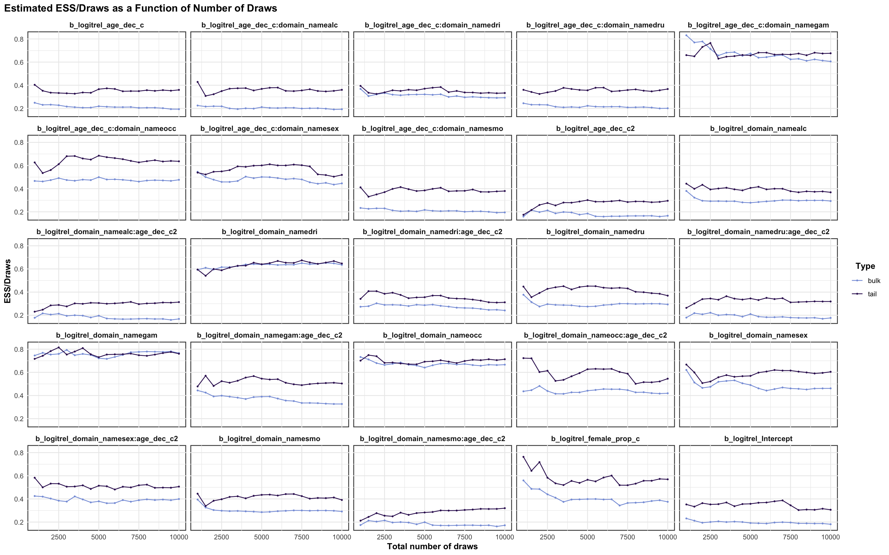
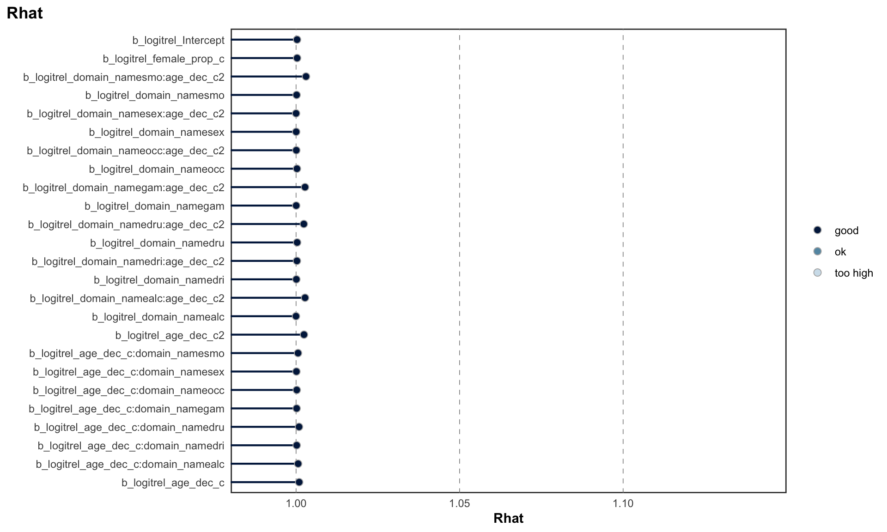
logitchange parameter
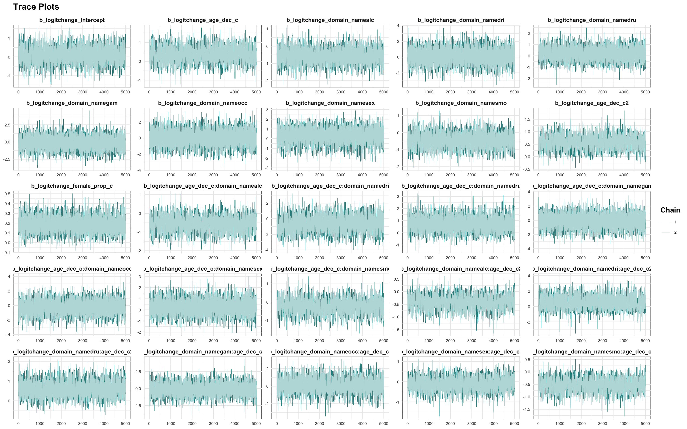
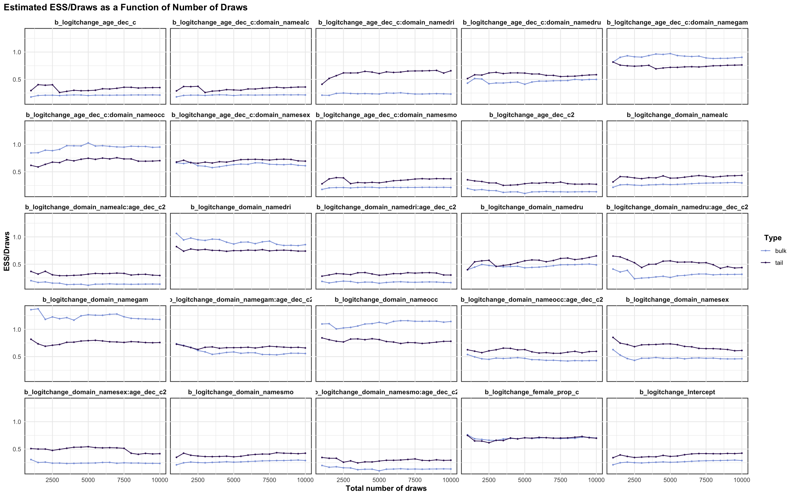
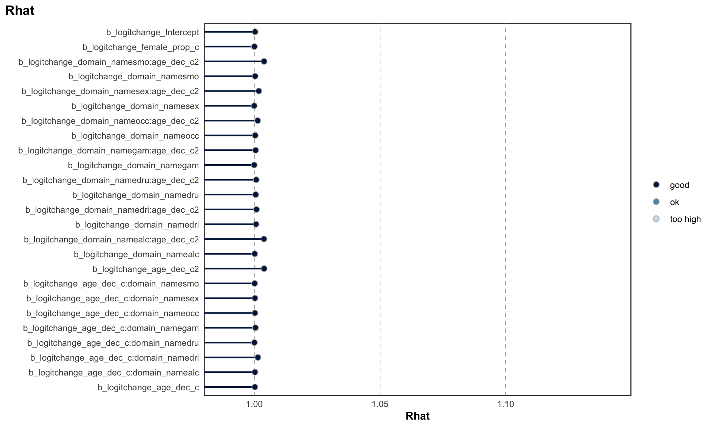
logitstabch parameter
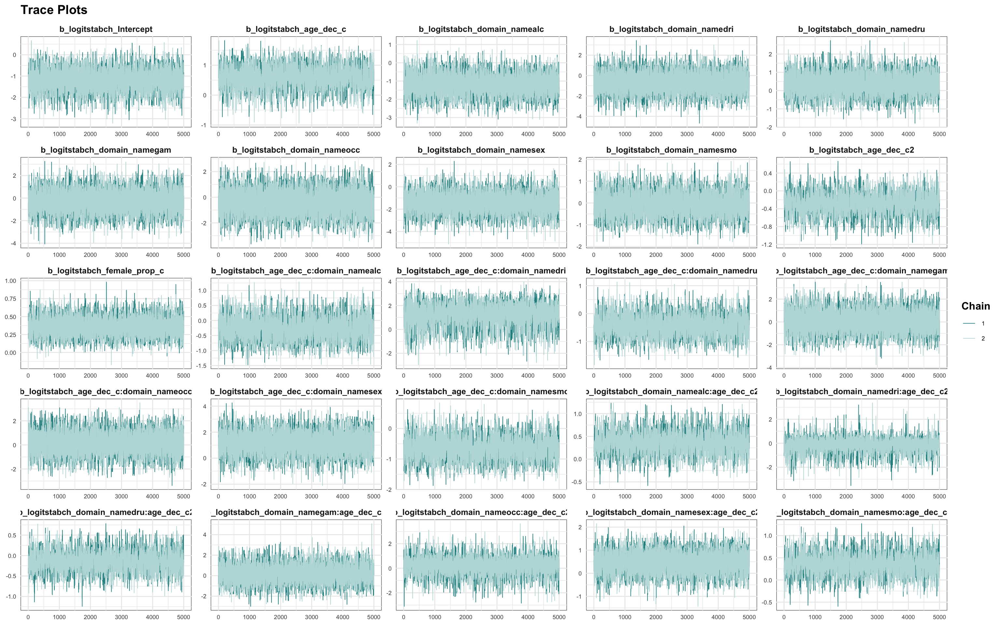
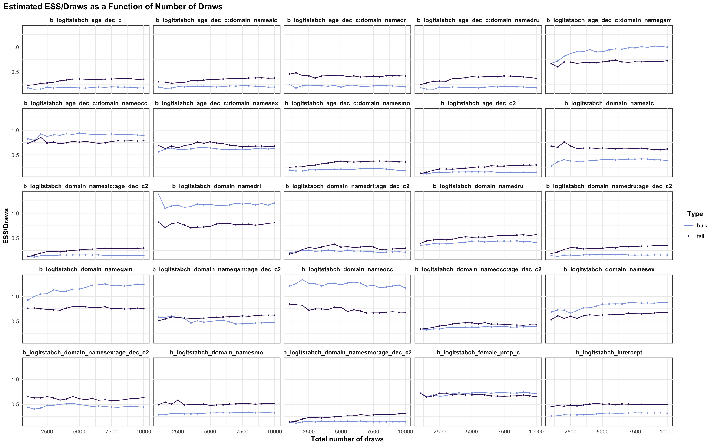
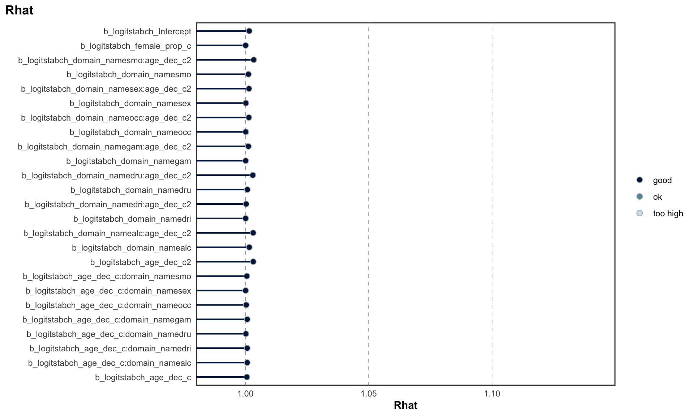
Random Structure
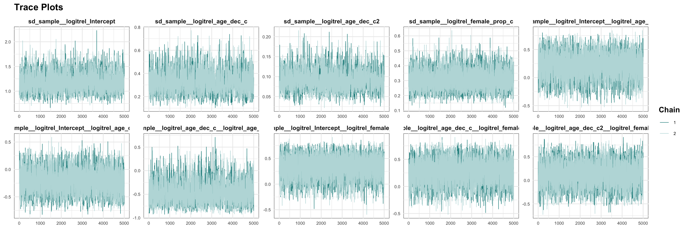
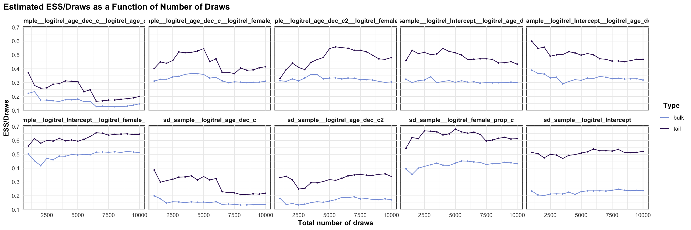
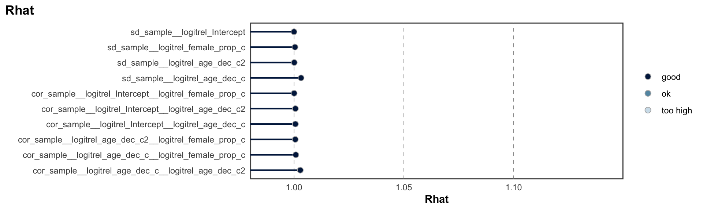
PPCs & LOO
Graphical posterior predictive checks
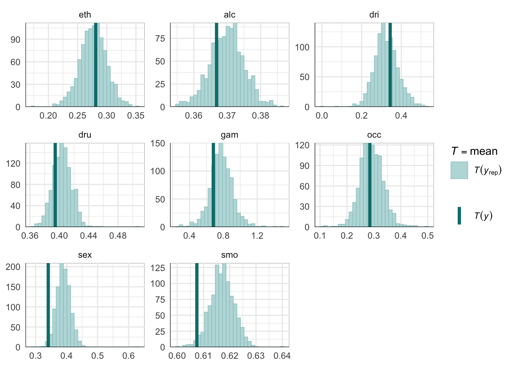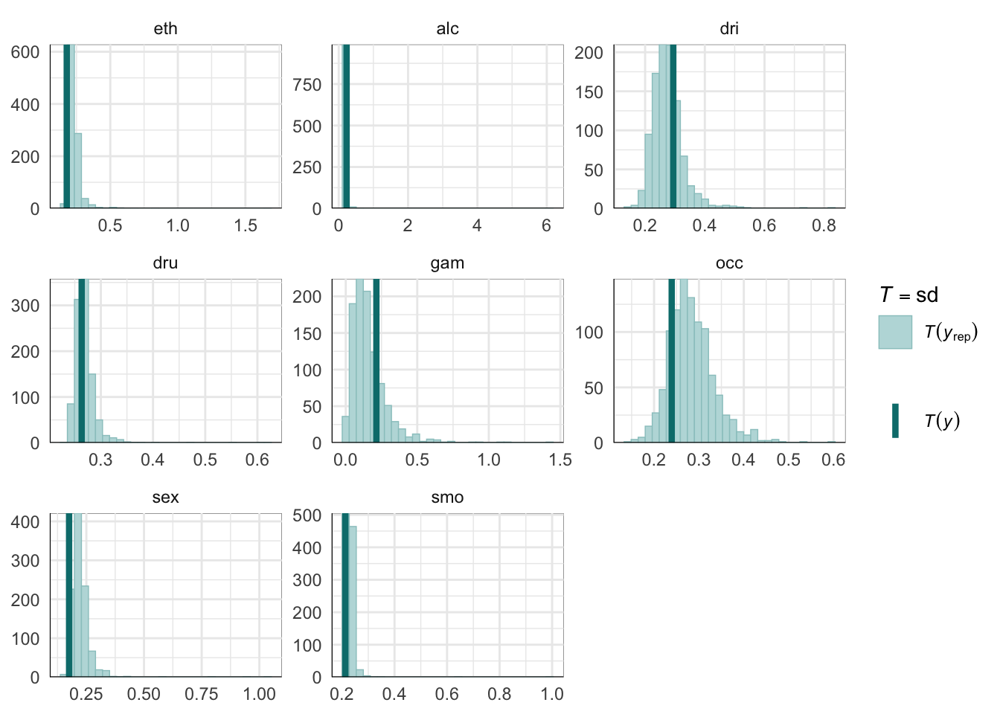
##
## Computed from 10000 by 3678 log-likelihood matrix
##
## Estimate SE
## elpd_loo 2429.3 65.1
## p_loo 191.6 6.1
## looic -4858.6 130.3
## ------
## Monte Carlo SE of elpd_loo is NA.
##
## Pareto k diagnostic values:
## Count Pct. Min. n_eff
## (-Inf, 0.5] (good) 3666 99.7% 865
## (0.5, 0.7] (ok) 8 0.2% 958
## (0.7, 1] (bad) 3 0.1% 466
## (1, Inf) (very bad) 1 0.0% 153
## See help('pareto-k-diagnostic') for details.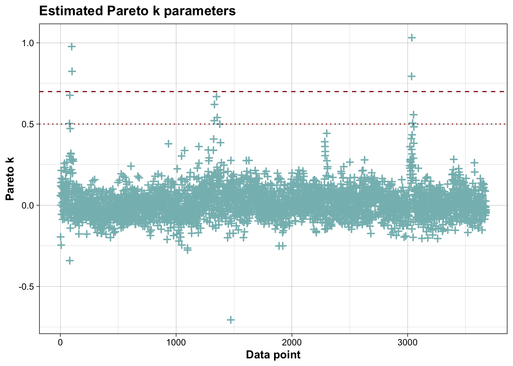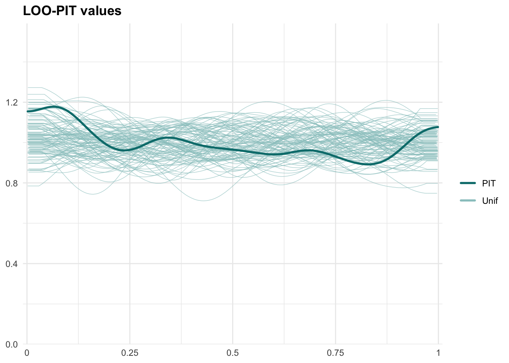
By-Panel Predictions
In tabs are panel-specific predictions for the trajectory of domain-specific test-retest correlations over time (predictions based on the weighted median age of the sample, 50% female).
Alcohol

Driving

Drugs

Ethical

Gambling

Occupational

Sexual Intercourse

Smoking

Behaviour
Model Summary
brms output
## Family: student
## Links: mu = identity; sigma = identity; nu = identity
## Formula: wcor | resp_se(sei, sigma = TRUE) ~ rel * (change * ((stabch^time_diff_dec) - 1) + 1)
## rel ~ inv_logit(logitrel)
## change ~ inv_logit(logitchange)
## stabch ~ inv_logit(logitstabch)
## logitrel ~ 1 + age_dec_c * domain_name + age_dec_c2 * domain_name + female_prop_c + (1 + age_dec_c + age_dec_c2 + female_prop_c | sample)
## logitchange ~ 1 + age_dec_c * domain_name + age_dec_c2 * domain_name + female_prop_c
## logitstabch ~ 1 + age_dec_c * domain_name + age_dec_c2 * domain_name + female_prop_c
## Data: data_w (Number of observations: 612)
## Draws: 2 chains, each with iter = 7000; warmup = 2000; thin = 1;
## total post-warmup draws = 10000
##
## Group-Level Effects:
## ~sample (Number of levels: 19)
## Estimate
## sd(logitrel_Intercept) 0.96
## sd(logitrel_age_dec_c) 0.15
## sd(logitrel_age_dec_c2) 0.03
## sd(logitrel_female_prop_c) 0.20
## cor(logitrel_Intercept,logitrel_age_dec_c) 0.43
## cor(logitrel_Intercept,logitrel_age_dec_c2) -0.05
## cor(logitrel_age_dec_c,logitrel_age_dec_c2) -0.03
## cor(logitrel_Intercept,logitrel_female_prop_c) 0.39
## cor(logitrel_age_dec_c,logitrel_female_prop_c) -0.09
## cor(logitrel_age_dec_c2,logitrel_female_prop_c) -0.14
## Est.Error
## sd(logitrel_Intercept) 0.20
## sd(logitrel_age_dec_c) 0.07
## sd(logitrel_age_dec_c2) 0.02
## sd(logitrel_female_prop_c) 0.09
## cor(logitrel_Intercept,logitrel_age_dec_c) 0.33
## cor(logitrel_Intercept,logitrel_age_dec_c2) 0.46
## cor(logitrel_age_dec_c,logitrel_age_dec_c2) 0.44
## cor(logitrel_Intercept,logitrel_female_prop_c) 0.37
## cor(logitrel_age_dec_c,logitrel_female_prop_c) 0.40
## cor(logitrel_age_dec_c2,logitrel_female_prop_c) 0.43
## l-95% CI
## sd(logitrel_Intercept) 0.64
## sd(logitrel_age_dec_c) 0.04
## sd(logitrel_age_dec_c2) 0.00
## sd(logitrel_female_prop_c) 0.06
## cor(logitrel_Intercept,logitrel_age_dec_c) -0.32
## cor(logitrel_Intercept,logitrel_age_dec_c2) -0.84
## cor(logitrel_age_dec_c,logitrel_age_dec_c2) -0.81
## cor(logitrel_Intercept,logitrel_female_prop_c) -0.44
## cor(logitrel_age_dec_c,logitrel_female_prop_c) -0.82
## cor(logitrel_age_dec_c2,logitrel_female_prop_c) -0.85
## u-95% CI
## sd(logitrel_Intercept) 1.42
## sd(logitrel_age_dec_c) 0.32
## sd(logitrel_age_dec_c2) 0.08
## sd(logitrel_female_prop_c) 0.41
## cor(logitrel_Intercept,logitrel_age_dec_c) 0.90
## cor(logitrel_Intercept,logitrel_age_dec_c2) 0.79
## cor(logitrel_age_dec_c,logitrel_age_dec_c2) 0.79
## cor(logitrel_Intercept,logitrel_female_prop_c) 0.92
## cor(logitrel_age_dec_c,logitrel_female_prop_c) 0.67
## cor(logitrel_age_dec_c2,logitrel_female_prop_c) 0.72
## Rhat
## sd(logitrel_Intercept) 1.00
## sd(logitrel_age_dec_c) 1.00
## sd(logitrel_age_dec_c2) 1.00
## sd(logitrel_female_prop_c) 1.00
## cor(logitrel_Intercept,logitrel_age_dec_c) 1.00
## cor(logitrel_Intercept,logitrel_age_dec_c2) 1.00
## cor(logitrel_age_dec_c,logitrel_age_dec_c2) 1.00
## cor(logitrel_Intercept,logitrel_female_prop_c) 1.00
## cor(logitrel_age_dec_c,logitrel_female_prop_c) 1.00
## cor(logitrel_age_dec_c2,logitrel_female_prop_c) 1.00
## Bulk_ESS
## sd(logitrel_Intercept) 4547
## sd(logitrel_age_dec_c) 4021
## sd(logitrel_age_dec_c2) 4039
## sd(logitrel_female_prop_c) 4704
## cor(logitrel_Intercept,logitrel_age_dec_c) 8118
## cor(logitrel_Intercept,logitrel_age_dec_c2) 13435
## cor(logitrel_age_dec_c,logitrel_age_dec_c2) 9670
## cor(logitrel_Intercept,logitrel_female_prop_c) 9576
## cor(logitrel_age_dec_c,logitrel_female_prop_c) 7963
## cor(logitrel_age_dec_c2,logitrel_female_prop_c) 5153
## Tail_ESS
## sd(logitrel_Intercept) 5979
## sd(logitrel_age_dec_c) 4845
## sd(logitrel_age_dec_c2) 5175
## sd(logitrel_female_prop_c) 3784
## cor(logitrel_Intercept,logitrel_age_dec_c) 7553
## cor(logitrel_Intercept,logitrel_age_dec_c2) 7882
## cor(logitrel_age_dec_c,logitrel_age_dec_c2) 7941
## cor(logitrel_Intercept,logitrel_female_prop_c) 6956
## cor(logitrel_age_dec_c,logitrel_female_prop_c) 7523
## cor(logitrel_age_dec_c2,logitrel_female_prop_c) 8357
##
## Population-Level Effects:
## Estimate Est.Error
## logitrel_Intercept -0.85 0.24
## logitrel_age_dec_c -0.07 0.07
## logitrel_domain_nameins -0.21 0.08
## logitrel_domain_nameinv 0.27 0.14
## logitrel_domain_nameocc -0.12 0.07
## logitrel_age_dec_c2 -0.00 0.02
## logitrel_female_prop_c -0.15 0.10
## logitrel_age_dec_c:domain_nameins -0.11 0.06
## logitrel_age_dec_c:domain_nameinv 0.07 0.08
## logitrel_age_dec_c:domain_nameocc -0.05 0.06
## logitrel_domain_nameins:age_dec_c2 0.05 0.03
## logitrel_domain_nameinv:age_dec_c2 -0.03 0.04
## logitrel_domain_nameocc:age_dec_c2 -0.02 0.02
## logitchange_Intercept -0.40 0.89
## logitchange_age_dec_c 0.11 0.83
## logitchange_domain_nameins 0.54 0.94
## logitchange_domain_nameinv 0.49 0.96
## logitchange_domain_nameocc -0.14 0.95
## logitchange_age_dec_c2 0.26 0.81
## logitchange_female_prop_c -0.04 0.90
## logitchange_age_dec_c:domain_nameins 0.22 0.93
## logitchange_age_dec_c:domain_nameinv 0.47 0.91
## logitchange_age_dec_c:domain_nameocc -0.27 0.88
## logitchange_domain_nameins:age_dec_c2 0.09 0.95
## logitchange_domain_nameinv:age_dec_c2 0.46 0.86
## logitchange_domain_nameocc:age_dec_c2 0.35 0.84
## logitstabch_Intercept 0.65 0.78
## logitstabch_age_dec_c 0.06 0.70
## logitstabch_domain_nameins -0.55 0.89
## logitstabch_domain_nameinv -0.35 0.88
## logitstabch_domain_nameocc 0.17 0.89
## logitstabch_age_dec_c2 0.13 0.61
## logitstabch_female_prop_c -0.38 0.69
## logitstabch_age_dec_c:domain_nameins -0.22 0.88
## logitstabch_age_dec_c:domain_nameinv -0.42 0.77
## logitstabch_age_dec_c:domain_nameocc 0.32 0.85
## logitstabch_domain_nameins:age_dec_c2 0.01 0.82
## logitstabch_domain_nameinv:age_dec_c2 -0.11 0.64
## logitstabch_domain_nameocc:age_dec_c2 -0.42 0.74
## l-95% CI u-95% CI
## logitrel_Intercept -1.32 -0.38
## logitrel_age_dec_c -0.22 0.06
## logitrel_domain_nameins -0.37 -0.04
## logitrel_domain_nameinv 0.00 0.56
## logitrel_domain_nameocc -0.24 0.02
## logitrel_age_dec_c2 -0.04 0.04
## logitrel_female_prop_c -0.37 0.02
## logitrel_age_dec_c:domain_nameins -0.24 0.01
## logitrel_age_dec_c:domain_nameinv -0.09 0.23
## logitrel_age_dec_c:domain_nameocc -0.17 0.07
## logitrel_domain_nameins:age_dec_c2 -0.00 0.11
## logitrel_domain_nameinv:age_dec_c2 -0.10 0.05
## logitrel_domain_nameocc:age_dec_c2 -0.07 0.03
## logitchange_Intercept -2.07 1.43
## logitchange_age_dec_c -1.51 1.80
## logitchange_domain_nameins -1.29 2.34
## logitchange_domain_nameinv -1.40 2.35
## logitchange_domain_nameocc -1.99 1.78
## logitchange_age_dec_c2 -1.22 1.96
## logitchange_female_prop_c -1.90 1.62
## logitchange_age_dec_c:domain_nameins -1.61 2.01
## logitchange_age_dec_c:domain_nameinv -1.33 2.23
## logitchange_age_dec_c:domain_nameocc -1.97 1.54
## logitchange_domain_nameins:age_dec_c2 -1.74 2.00
## logitchange_domain_nameinv:age_dec_c2 -1.17 2.20
## logitchange_domain_nameocc:age_dec_c2 -1.28 2.05
## logitstabch_Intercept -0.97 2.13
## logitstabch_age_dec_c -1.35 1.40
## logitstabch_domain_nameins -2.21 1.29
## logitstabch_domain_nameinv -2.06 1.42
## logitstabch_domain_nameocc -1.63 1.89
## logitstabch_age_dec_c2 -1.12 1.33
## logitstabch_female_prop_c -1.59 1.22
## logitstabch_age_dec_c:domain_nameins -1.94 1.55
## logitstabch_age_dec_c:domain_nameinv -1.96 1.12
## logitstabch_age_dec_c:domain_nameocc -1.42 1.94
## logitstabch_domain_nameins:age_dec_c2 -1.66 1.63
## logitstabch_domain_nameinv:age_dec_c2 -1.39 1.16
## logitstabch_domain_nameocc:age_dec_c2 -1.94 1.03
## Rhat Bulk_ESS
## logitrel_Intercept 1.00 2319
## logitrel_age_dec_c 1.00 4250
## logitrel_domain_nameins 1.00 7200
## logitrel_domain_nameinv 1.00 6043
## logitrel_domain_nameocc 1.00 7186
## logitrel_age_dec_c2 1.00 6090
## logitrel_female_prop_c 1.00 5357
## logitrel_age_dec_c:domain_nameins 1.00 6099
## logitrel_age_dec_c:domain_nameinv 1.00 5865
## logitrel_age_dec_c:domain_nameocc 1.00 5407
## logitrel_domain_nameins:age_dec_c2 1.00 4929
## logitrel_domain_nameinv:age_dec_c2 1.00 4915
## logitrel_domain_nameocc:age_dec_c2 1.00 5049
## logitchange_Intercept 1.00 9151
## logitchange_age_dec_c 1.00 9388
## logitchange_domain_nameins 1.00 12618
## logitchange_domain_nameinv 1.00 10009
## logitchange_domain_nameocc 1.00 10084
## logitchange_age_dec_c2 1.00 3695
## logitchange_female_prop_c 1.00 3925
## logitchange_age_dec_c:domain_nameins 1.00 13906
## logitchange_age_dec_c:domain_nameinv 1.00 13132
## logitchange_age_dec_c:domain_nameocc 1.00 9698
## logitchange_domain_nameins:age_dec_c2 1.00 8686
## logitchange_domain_nameinv:age_dec_c2 1.00 8513
## logitchange_domain_nameocc:age_dec_c2 1.00 4883
## logitstabch_Intercept 1.00 7551
## logitstabch_age_dec_c 1.00 7194
## logitstabch_domain_nameins 1.00 10261
## logitstabch_domain_nameinv 1.00 8889
## logitstabch_domain_nameocc 1.00 8965
## logitstabch_age_dec_c2 1.00 4354
## logitstabch_female_prop_c 1.00 3788
## logitstabch_age_dec_c:domain_nameins 1.00 8535
## logitstabch_age_dec_c:domain_nameinv 1.00 9220
## logitstabch_age_dec_c:domain_nameocc 1.00 8292
## logitstabch_domain_nameins:age_dec_c2 1.00 7615
## logitstabch_domain_nameinv:age_dec_c2 1.00 5885
## logitstabch_domain_nameocc:age_dec_c2 1.00 4060
## Tail_ESS
## logitrel_Intercept 3603
## logitrel_age_dec_c 5075
## logitrel_domain_nameins 7241
## logitrel_domain_nameinv 6785
## logitrel_domain_nameocc 6890
## logitrel_age_dec_c2 5598
## logitrel_female_prop_c 5876
## logitrel_age_dec_c:domain_nameins 5303
## logitrel_age_dec_c:domain_nameinv 6546
## logitrel_age_dec_c:domain_nameocc 7365
## logitrel_domain_nameins:age_dec_c2 4862
## logitrel_domain_nameinv:age_dec_c2 5874
## logitrel_domain_nameocc:age_dec_c2 5533
## logitchange_Intercept 7277
## logitchange_age_dec_c 7544
## logitchange_domain_nameins 8159
## logitchange_domain_nameinv 7843
## logitchange_domain_nameocc 8338
## logitchange_age_dec_c2 6356
## logitchange_female_prop_c 7370
## logitchange_age_dec_c:domain_nameins 7670
## logitchange_age_dec_c:domain_nameinv 8218
## logitchange_age_dec_c:domain_nameocc 8088
## logitchange_domain_nameins:age_dec_c2 7355
## logitchange_domain_nameinv:age_dec_c2 7377
## logitchange_domain_nameocc:age_dec_c2 7633
## logitstabch_Intercept 8184
## logitstabch_age_dec_c 7231
## logitstabch_domain_nameins 7682
## logitstabch_domain_nameinv 7261
## logitstabch_domain_nameocc 7856
## logitstabch_age_dec_c2 5242
## logitstabch_female_prop_c 5741
## logitstabch_age_dec_c:domain_nameins 8292
## logitstabch_age_dec_c:domain_nameinv 7068
## logitstabch_age_dec_c:domain_nameocc 7946
## logitstabch_domain_nameins:age_dec_c2 7567
## logitstabch_domain_nameinv:age_dec_c2 6986
## logitstabch_domain_nameocc:age_dec_c2 6526
##
## Family Specific Parameters:
## Estimate Est.Error l-95% CI u-95% CI Rhat Bulk_ESS
## sigma 0.04 0.01 0.02 0.05 1.00 6201
## nu 9.41 3.63 5.15 18.73 1.00 9155
## Tail_ESS
## sigma 6292
## nu 7532
##
## Draws were sampled using sample(hmc). For each parameter, Bulk_ESS
## and Tail_ESS are effective sample size measures, and Rhat is the potential
## scale reduction factor on split chains (at convergence, Rhat = 1).MCMC diagnostics
logitrel parameter
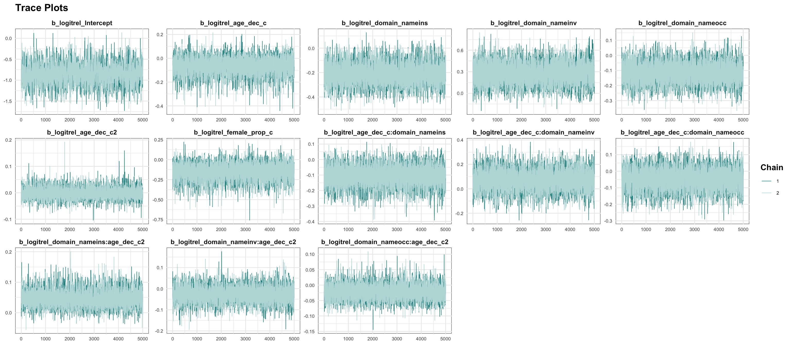
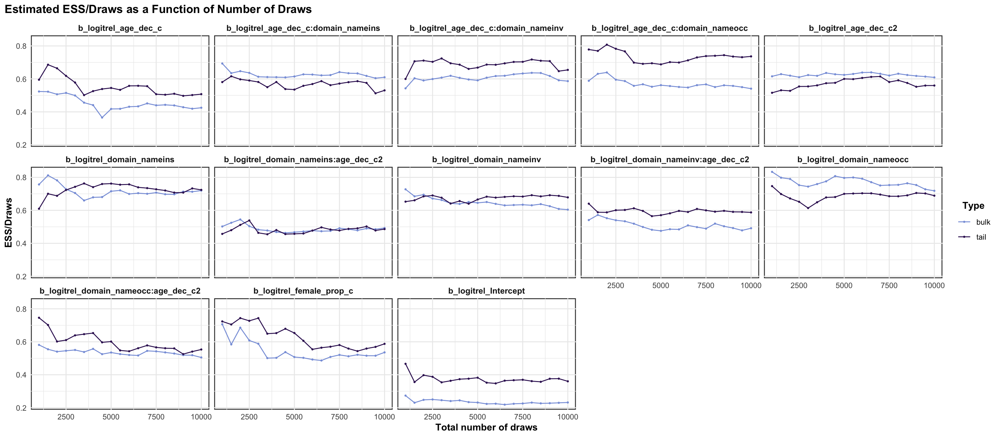
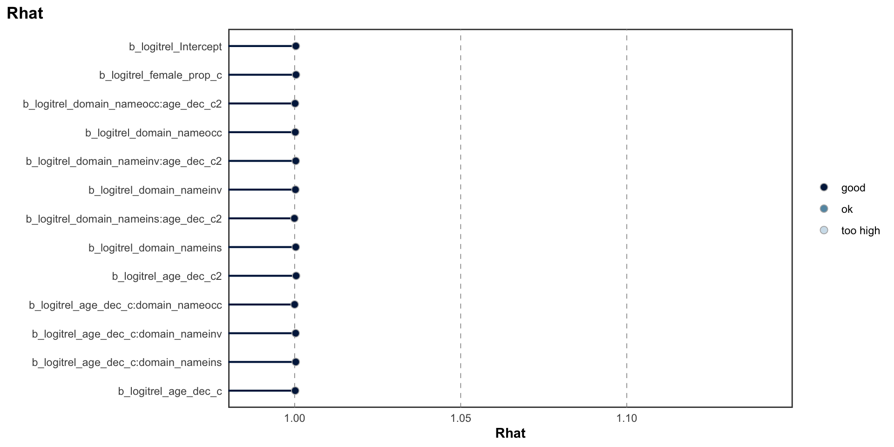
logitchange parameter
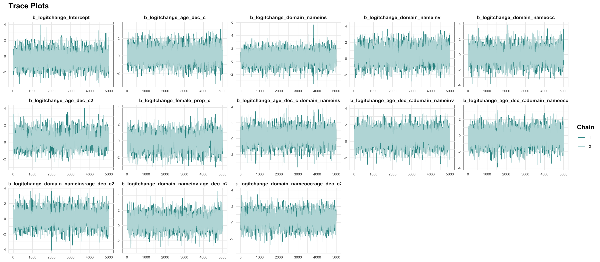
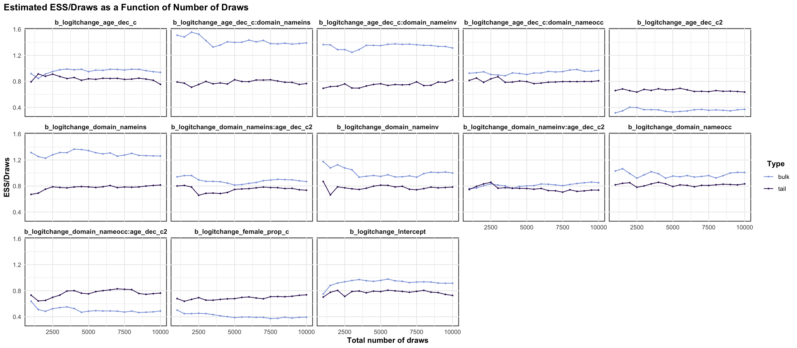
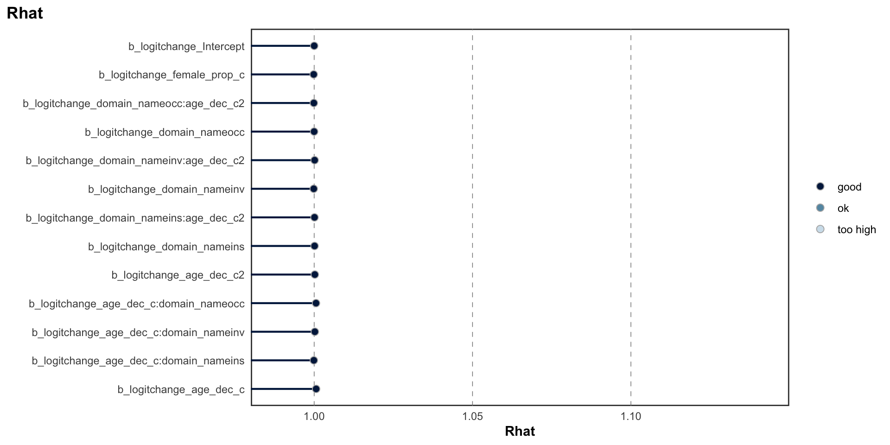
logitstabch parameter
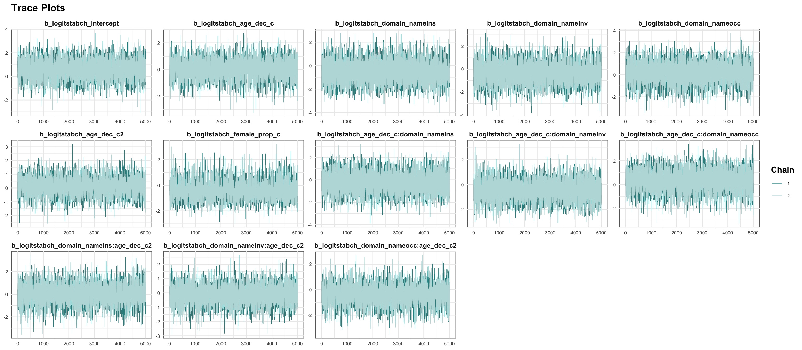
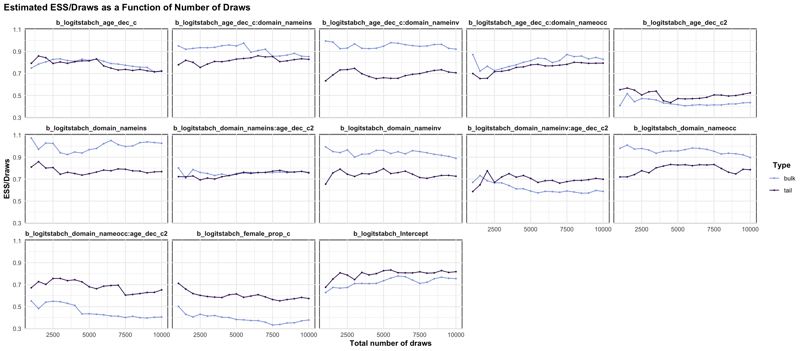
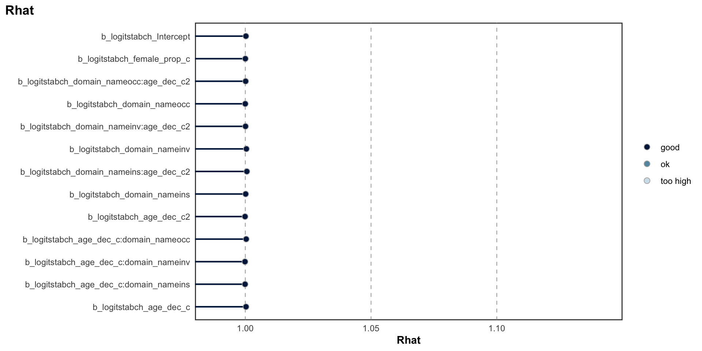
Random Structure
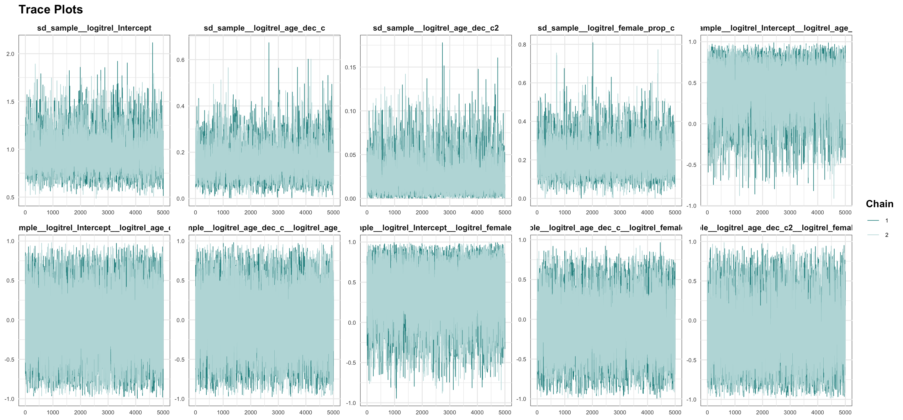
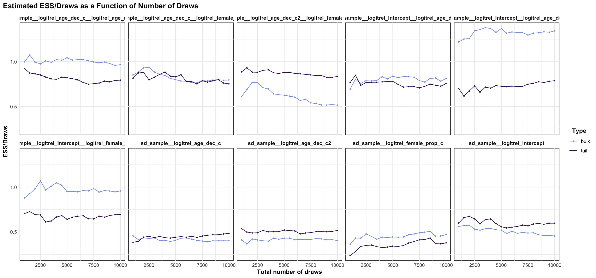
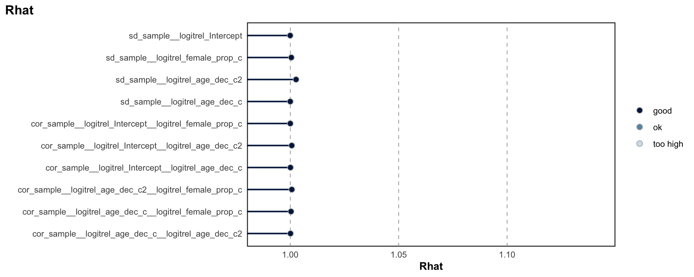
PPCs & LOO
Graphical posterior predictive checks
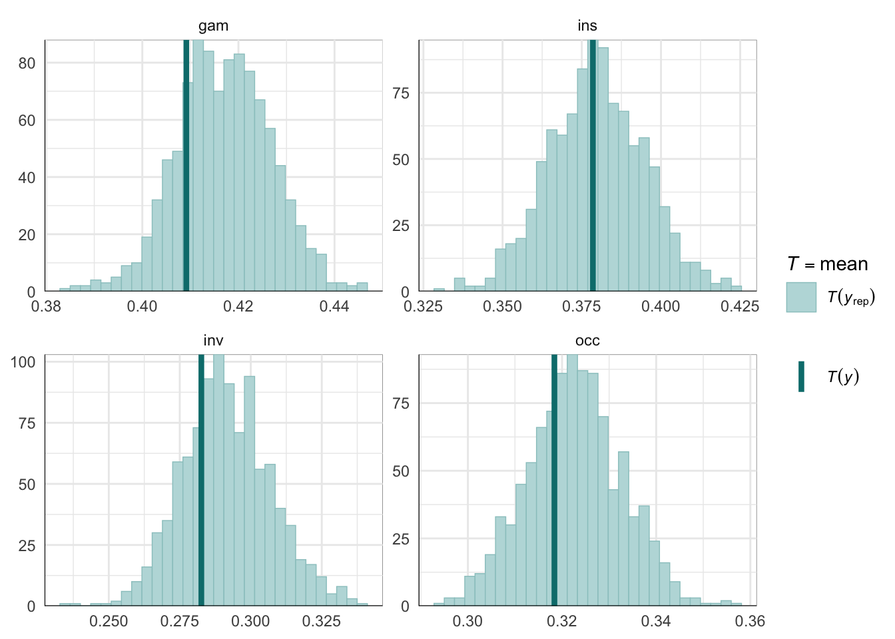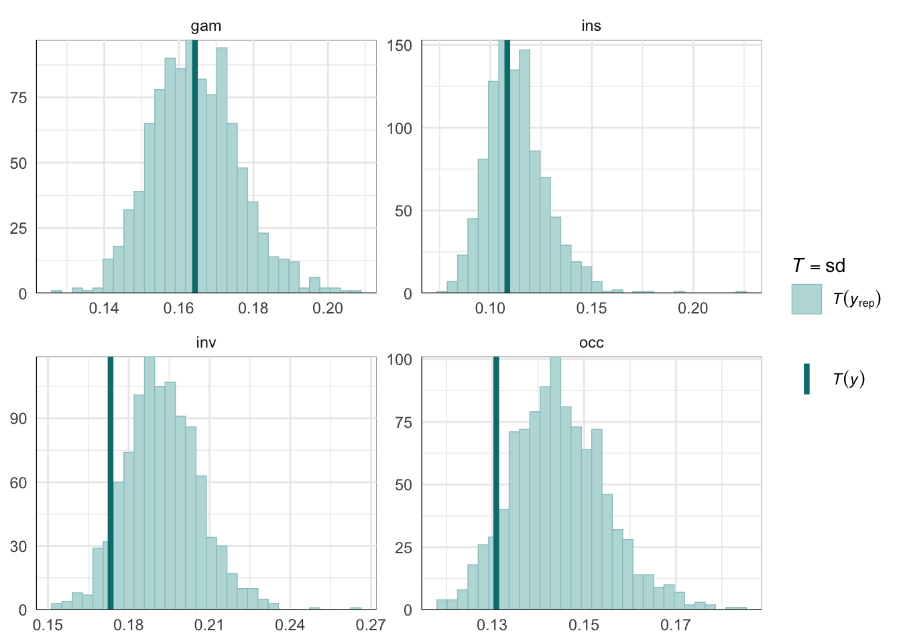
##
## Computed from 10000 by 612 log-likelihood matrix
##
## Estimate SE
## elpd_loo 537.0 22.6
## p_loo 52.2 2.9
## looic -1074.1 45.2
## ------
## Monte Carlo SE of elpd_loo is 0.1.
##
## Pareto k diagnostic values:
## Count Pct. Min. n_eff
## (-Inf, 0.5] (good) 607 99.2% 1441
## (0.5, 0.7] (ok) 5 0.8% 1987
## (0.7, 1] (bad) 0 0.0% <NA>
## (1, Inf) (very bad) 0 0.0% <NA>
##
## All Pareto k estimates are ok (k < 0.7).
## See help('pareto-k-diagnostic') for details.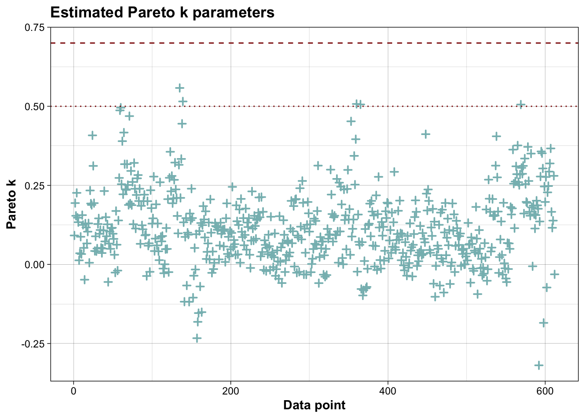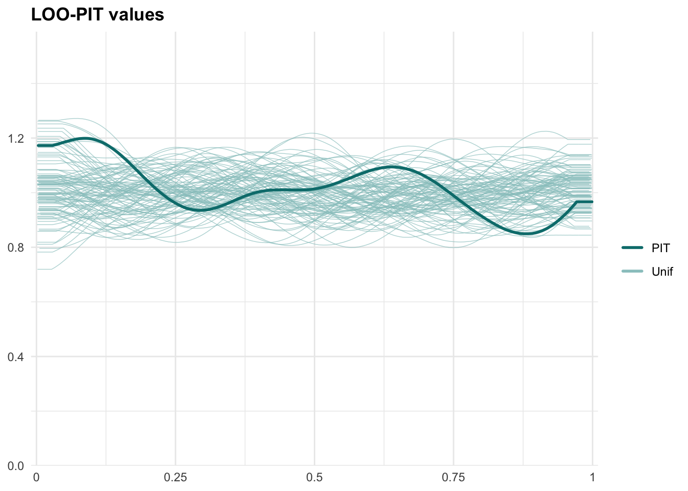
By-Panel Predictions
In tabs are panel-specific predictions for the trajectory of domain-specific test-retest correlations over time (predictions based on the weighted median age of the sample, 50% female).
Gambling

Insurance

Investment

Occupational

Fitted Model: Anusic & Schimmack (2015)
Model Specfication
For the modeling of the reliability parameter we did not include a random structure given that in this dataset close to 70% of the studies/samples had 4 or less observations. This results in a lack of response variability within each study/sample, and can be problematic for model convergence, as well as the estimation of random intercepts and slopes.
# specify family
family <- brmsfamily(
family = "student",
link = "identity"
)
# formula
formula <- bf(
wcor | se(se, sigma = TRUE) ~ rel * ((1-change) + (change) * (stabch^time_diff_dec)), #
nlf(rel ~ inv_logit(logitrel)),
nlf(change ~ inv_logit(logitchange)),
nlf(stabch ~ inv_logit(logitstabch)),
logitrel ~ 1 + construct*age_dec_c + construct*age_dec_c2 + female_prop_c,
logitchange ~ 1+ construct*age_dec_c + construct*age_dec_c2 + female_prop_c,
logitstabch ~ 1+ construct*age_dec_c + construct*age_dec_c2 + female_prop_c,
nl = TRUE
)
# weakly informative priors
priors <-
prior(normal(0,1), nlpar="logitrel", class = "b") +
prior(normal(0,1), nlpar="logitchange", class = "b") +
prior(normal(0,1), nlpar="logitstabch", class = "b") +
prior(normal(0,1), class = "sigma")Model Summary
brms output
## Family: student
## Links: mu = identity; sigma = identity; nu = identity
## Formula: retest | resp_se(se, sigma = TRUE) ~ rel * (change * ((stabch^time_diff_dec) - 1) + 1)
## rel ~ inv_logit(logitrel)
## change ~ inv_logit(logitchange)
## stabch ~ inv_logit(logitstabch)
## logitrel ~ 1 + age_dec_c * construct + age_dec_c2 * construct + female_prop_c
## logitchange ~ 1 + age_dec_c * construct + age_dec_c2 * construct + female_prop_c
## logitstabch ~ 1 + age_dec_c * construct + age_dec_c2 * construct + female_prop_c
## Data: data_as (Number of observations: 949)
## Draws: 2 chains, each with iter = 7000; warmup = 2000; thin = 1;
## total post-warmup draws = 10000
##
## Population-Level Effects:
## Estimate Est.Error
## logitrel_Intercept 0.52 0.07
## logitrel_age_dec_c -0.19 0.05
## logitrel_constructaffe -0.30 0.11
## logitrel_constructlife -0.14 0.09
## logitrel_constructself -0.02 0.15
## logitrel_age_dec_c2 0.05 0.03
## logitrel_female_prop_c 0.01 0.10
## logitrel_age_dec_c:constructaffe 0.02 0.06
## logitrel_age_dec_c:constructlife 0.09 0.06
## logitrel_age_dec_c:constructself -0.19 0.12
## logitrel_constructaffe:age_dec_c2 -0.01 0.03
## logitrel_constructlife:age_dec_c2 -0.01 0.03
## logitrel_constructself:age_dec_c2 0.02 0.06
## logitchange_Intercept -0.16 0.43
## logitchange_age_dec_c -0.06 0.39
## logitchange_constructaffe 0.53 0.69
## logitchange_constructlife 0.35 0.44
## logitchange_constructself -0.30 0.62
## logitchange_age_dec_c2 0.26 0.21
## logitchange_female_prop_c -0.18 0.10
## logitchange_age_dec_c:constructaffe -0.36 0.65
## logitchange_age_dec_c:constructlife 0.12 0.40
## logitchange_age_dec_c:constructself -0.76 0.57
## logitchange_constructaffe:age_dec_c2 0.40 0.57
## logitchange_constructlife:age_dec_c2 -0.16 0.21
## logitchange_constructself:age_dec_c2 -0.48 0.24
## logitstabch_Intercept -0.27 0.54
## logitstabch_age_dec_c 0.98 0.50
## logitstabch_constructaffe 0.30 0.67
## logitstabch_constructlife -0.83 0.60
## logitstabch_constructself -0.16 0.91
## logitstabch_age_dec_c2 -0.33 0.22
## logitstabch_female_prop_c -0.62 0.38
## logitstabch_age_dec_c:constructaffe -0.71 0.61
## logitstabch_age_dec_c:constructlife -0.10 0.51
## logitstabch_age_dec_c:constructself -0.10 0.80
## logitstabch_constructaffe:age_dec_c2 0.19 0.27
## logitstabch_constructlife:age_dec_c2 0.12 0.23
## logitstabch_constructself:age_dec_c2 -0.20 0.42
## l-95% CI u-95% CI
## logitrel_Intercept 0.39 0.68
## logitrel_age_dec_c -0.28 -0.07
## logitrel_constructaffe -0.50 -0.08
## logitrel_constructlife -0.32 0.05
## logitrel_constructself -0.29 0.32
## logitrel_age_dec_c2 0.02 0.12
## logitrel_female_prop_c -0.18 0.20
## logitrel_age_dec_c:constructaffe -0.10 0.15
## logitrel_age_dec_c:constructlife -0.04 0.20
## logitrel_age_dec_c:constructself -0.41 0.09
## logitrel_constructaffe:age_dec_c2 -0.08 0.05
## logitrel_constructlife:age_dec_c2 -0.08 0.03
## logitrel_constructself:age_dec_c2 -0.06 0.15
## logitchange_Intercept -0.97 0.70
## logitchange_age_dec_c -0.82 0.71
## logitchange_constructaffe -0.71 2.00
## logitchange_constructlife -0.52 1.20
## logitchange_constructself -1.54 0.86
## logitchange_age_dec_c2 -0.05 0.74
## logitchange_female_prop_c -0.38 0.01
## logitchange_age_dec_c:constructaffe -1.66 0.95
## logitchange_age_dec_c:constructlife -0.63 0.95
## logitchange_age_dec_c:constructself -1.91 0.30
## logitchange_constructaffe:age_dec_c2 -0.34 1.78
## logitchange_constructlife:age_dec_c2 -0.65 0.16
## logitchange_constructself:age_dec_c2 -1.02 -0.07
## logitstabch_Intercept -1.46 0.66
## logitstabch_age_dec_c -0.19 1.82
## logitstabch_constructaffe -1.16 1.55
## logitstabch_constructlife -1.96 0.41
## logitstabch_constructself -2.09 1.49
## logitstabch_age_dec_c2 -0.87 0.07
## logitstabch_female_prop_c -1.52 -0.02
## logitstabch_age_dec_c:constructaffe -1.95 0.60
## logitstabch_age_dec_c:constructlife -0.96 1.09
## logitstabch_age_dec_c:constructself -1.56 1.59
## logitstabch_constructaffe:age_dec_c2 -0.36 0.78
## logitstabch_constructlife:age_dec_c2 -0.29 0.66
## logitstabch_constructself:age_dec_c2 -0.94 0.76
## Rhat Bulk_ESS
## logitrel_Intercept 1.00 5903
## logitrel_age_dec_c 1.00 2586
## logitrel_constructaffe 1.00 7544
## logitrel_constructlife 1.00 6484
## logitrel_constructself 1.00 5643
## logitrel_age_dec_c2 1.00 1322
## logitrel_female_prop_c 1.00 7821
## logitrel_age_dec_c:constructaffe 1.00 2710
## logitrel_age_dec_c:constructlife 1.00 3661
## logitrel_age_dec_c:constructself 1.00 2486
## logitrel_constructaffe:age_dec_c2 1.00 1626
## logitrel_constructlife:age_dec_c2 1.00 1736
## logitrel_constructself:age_dec_c2 1.00 2070
## logitchange_Intercept 1.00 1388
## logitchange_age_dec_c 1.00 998
## logitchange_constructaffe 1.00 4539
## logitchange_constructlife 1.00 1485
## logitchange_constructself 1.00 2126
## logitchange_age_dec_c2 1.00 1632
## logitchange_female_prop_c 1.00 11830
## logitchange_age_dec_c:constructaffe 1.00 2999
## logitchange_age_dec_c:constructlife 1.00 1021
## logitchange_age_dec_c:constructself 1.00 1572
## logitchange_constructaffe:age_dec_c2 1.00 2548
## logitchange_constructlife:age_dec_c2 1.00 1723
## logitchange_constructself:age_dec_c2 1.00 2397
## logitstabch_Intercept 1.00 2180
## logitstabch_age_dec_c 1.00 662
## logitstabch_constructaffe 1.00 2637
## logitstabch_constructlife 1.00 2370
## logitstabch_constructself 1.00 4440
## logitstabch_age_dec_c2 1.00 644
## logitstabch_female_prop_c 1.00 6567
## logitstabch_age_dec_c:constructaffe 1.00 802
## logitstabch_age_dec_c:constructlife 1.00 679
## logitstabch_age_dec_c:constructself 1.00 1416
## logitstabch_constructaffe:age_dec_c2 1.00 744
## logitstabch_constructlife:age_dec_c2 1.00 676
## logitstabch_constructself:age_dec_c2 1.00 1679
## Tail_ESS
## logitrel_Intercept 5586
## logitrel_age_dec_c 2017
## logitrel_constructaffe 6690
## logitrel_constructlife 6875
## logitrel_constructself 4972
## logitrel_age_dec_c2 1457
## logitrel_female_prop_c 7412
## logitrel_age_dec_c:constructaffe 2665
## logitrel_age_dec_c:constructlife 3296
## logitrel_age_dec_c:constructself 1563
## logitrel_constructaffe:age_dec_c2 1774
## logitrel_constructlife:age_dec_c2 1495
## logitrel_constructself:age_dec_c2 1627
## logitchange_Intercept 3687
## logitchange_age_dec_c 2790
## logitchange_constructaffe 6350
## logitchange_constructlife 4066
## logitchange_constructself 4090
## logitchange_age_dec_c2 3258
## logitchange_female_prop_c 6978
## logitchange_age_dec_c:constructaffe 6155
## logitchange_age_dec_c:constructlife 4001
## logitchange_age_dec_c:constructself 2327
## logitchange_constructaffe:age_dec_c2 3742
## logitchange_constructlife:age_dec_c2 3886
## logitchange_constructself:age_dec_c2 3355
## logitstabch_Intercept 4195
## logitstabch_age_dec_c 1044
## logitstabch_constructaffe 4143
## logitstabch_constructlife 4641
## logitstabch_constructself 5614
## logitstabch_age_dec_c2 896
## logitstabch_female_prop_c 6423
## logitstabch_age_dec_c:constructaffe 1332
## logitstabch_age_dec_c:constructlife 1214
## logitstabch_age_dec_c:constructself 2194
## logitstabch_constructaffe:age_dec_c2 1085
## logitstabch_constructlife:age_dec_c2 899
## logitstabch_constructself:age_dec_c2 3111
##
## Family Specific Parameters:
## Estimate Est.Error l-95% CI u-95% CI Rhat Bulk_ESS
## sigma 0.08 0.00 0.07 0.09 1.00 7721
## nu 4.52 1.05 3.06 7.09 1.00 8250
## Tail_ESS
## sigma 6665
## nu 6487
##
## Draws were sampled using sample(hmc). For each parameter, Bulk_ESS
## and Tail_ESS are effective sample size measures, and Rhat is the potential
## scale reduction factor on split chains (at convergence, Rhat = 1).MCMC diagnostics
logitrel parameter

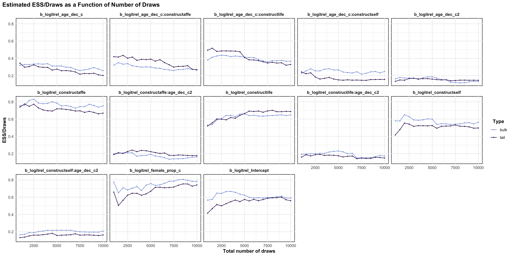
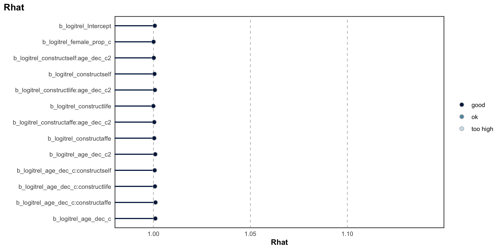
logitchange parameter
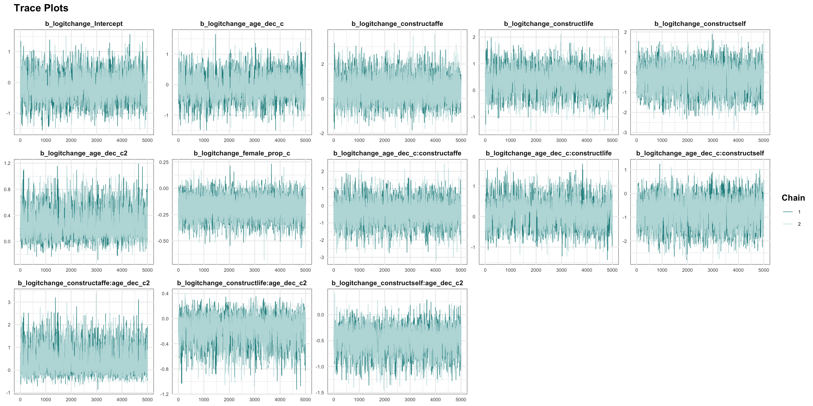
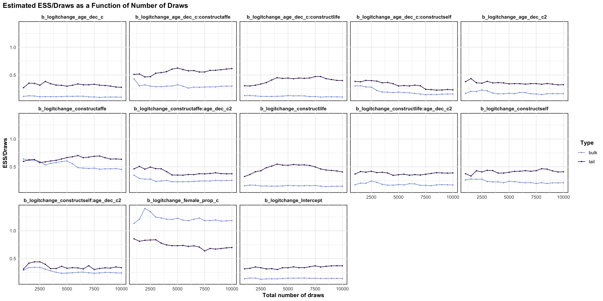
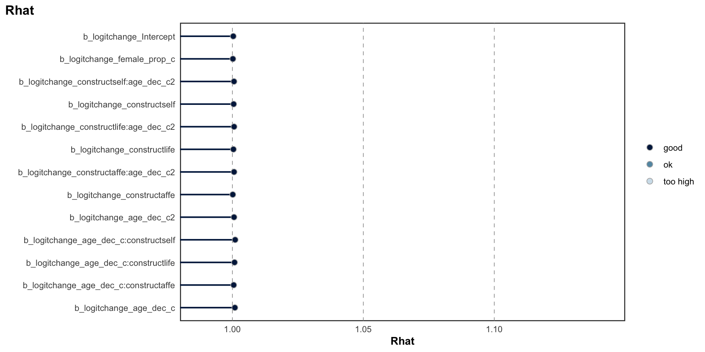
logitstabch parameter
Random Structure
NOT APPLICABLE
PPCs & LOO
Graphical posterior predictive checks
##
## Computed from 10000 by 949 log-likelihood matrix
##
## Estimate SE
## elpd_loo 762.6 29.1
## p_loo 46.6 2.4
## looic -1525.1 58.3
## ------
## Monte Carlo SE of elpd_loo is 0.1.
##
## Pareto k diagnostic values:
## Count Pct. Min. n_eff
## (-Inf, 0.5] (good) 948 99.9% 563
## (0.5, 0.7] (ok) 1 0.1% 1329
## (0.7, 1] (bad) 0 0.0% <NA>
## (1, Inf) (very bad) 0 0.0% <NA>
##
## All Pareto k estimates are ok (k < 0.7).
## See help('pareto-k-diagnostic') for details.By-Construct Predictions
Construct-specific predictions for the trajectory of test-retest correlations over time (predictions based on the weighted mean age of the respondents for each construct, 50% female).

Social